Privacy is not a form to fill in. It is an engineering discipline that measures the risk in real data and reduces it with law, process and technology.
My work is in mobile security, where the focus is usually on confidentiality and access control. The PC DPO 360 (PrivaSapien Certified Data Protection Officer 360) certification widened this view. It treats privacy as a discipline of its own. Its central concern is what somebody can learn about a person from data, even when that data is fully secure. This article records what I learned, in the order of the course, for readers who work with personal data, privacy law or artificial intelligence (AI).
A story to begin
Think of your personal data as a diary. It holds your name, your address, your health and your habits. Many organizations ask to borrow it. Follow the diary through one week, and note the questions that come up. This article answers each of them.
The request to borrow
A fitness app asks to borrow your diary. It shows a long page of terms, and you tap "I agree" without reading. The app promises to read only the pages about your exercise.
The strong cupboard
The app keeps the diary in a strong cupboard. Nobody can steal it. But the app copies pages that it never needed, and it shares them with partners.
The page without a name
The app removes your name from the cover and gives some pages to a research partner. The pages still show your age, your gender and your pincode. A clerk at the partner compares them with a public voter list and finds you in minutes.
The blurred copy and the sealed box
A careful partner blurs some words before it reads. Another partner never opens the diary at all. It works on a sealed copy and still finds the answer that it needs.
The twin diary
A school wants many diaries to teach its students about fitness. Instead of yours, it gets a twin diary. The twin has the same patterns as thousands of real diaries, but it belongs to nobody.
The talkative assistant
The app adds a smart assistant that read many diaries. A stranger asks it a clever question, and the assistant repeats a line from your diary.
The certificate
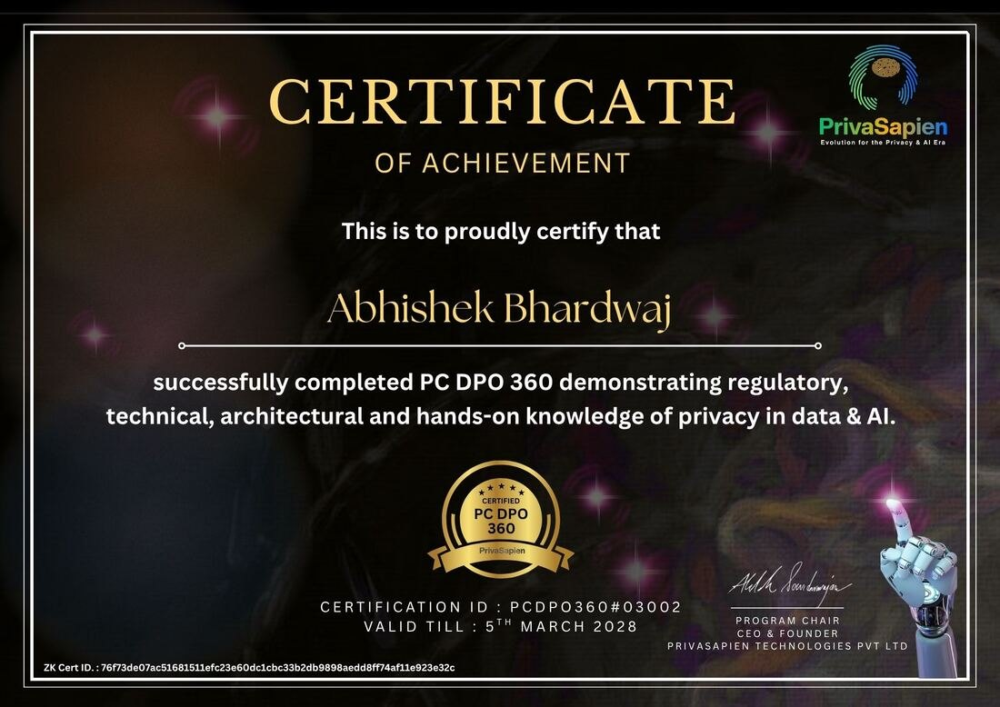
PrivaSapien Certified Data Protection Officer (DPO) 360
- Holder
- Abhishek Bhardwaj
- Certification ID
- PCDPO360#03002
- Valid until
- 5 March 2028
- Issued by
- PrivaSapien Technologies
The course provider presented its recognitions at the start. These include Google for Startups (AI) and the Accenture Ventures Tech Next Challenge 24. Another is the Morgan Stanley Chief Technology Officer (CTO) Award for the Future of AI. The National Association of Software and Service Companies (NASSCOM) gave its Responsible AI Game Changer Award. The list also includes the Mobility and Automobile Innovation Lab (MAIL) challenge of Maruti Suzuki. Last is graduation from the privacy enhancing technologies (PET) Sandbox of the Saudi Data and AI Authority (SDAIA).
The course at a glance
PC DPO 360 is a certification for privacy leaders and Data Protection Officers. The number 360 shows the aim to cover the role from all sides. The course presents this as a compass with four points.
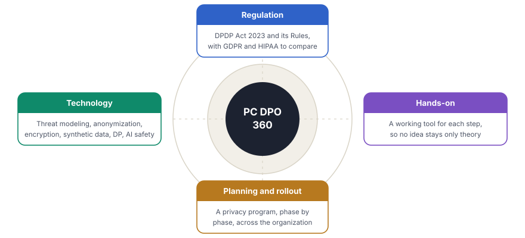
- Regulation. The requirements of the law. The main law is the Digital Personal Data Protection (DPDP) Act 2023 of India, with its Rules. For comparison, the course uses the General Data Protection Regulation (GDPR) of the European Union (EU). It also uses the Health Insurance Portability and Accountability Act (HIPAA) of the United States (US).
- Technology. The tools that actually reduce risk, such as privacy threat modeling, anonymization, encryption, synthetic data, differential privacy and AI safety.
- Planning and rollout. The introduction of a privacy program into an organization, phase by phase.
- Hands-on work. A working tool for each step, so that no idea stays theoretical.
The course also compares itself with the certifications of the International Association of Privacy Professionals (IAPP). One axis goes from policy and concepts to governance, planning and implementation. The other axis goes from technology and concepts to hands-on mitigation, integration and automation.
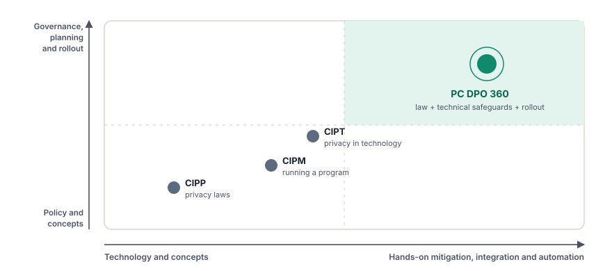
| Certification | Main focus | Place on the chart |
|---|---|---|
| Certified Information Privacy Professional (CIPP) | Privacy laws and regulations | Concept side, lower half |
| Certified Information Privacy Manager (CIPM) | Management of a privacy program | Policy and concept side, lower half |
| Certified Information Privacy Technologist (CIPT) | Privacy in technology | Concept side, near the middle |
| PC DPO 360 | Law, hands-on technical safeguards and rollout planning | Top right, hands-on work and implementation |
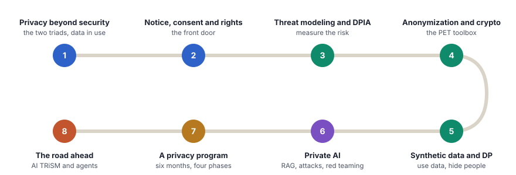
Draft rules and final rules. The course material is from mid-2025, so it uses the draft DPDP Rules of January 2025. The government notified the final Digital Personal Data Protection Rules, 2025 in November 2025. The Gazette is dated 13 November, and the public notice came on 14 November.
Most rule numbers stay the same up to Rule 11. The final text adds a new Rule 12 on exemptions for the data of children. Thus, the draft Rules 12 to 15 are now Rules 13 to 16. Where a draft number appears, the final number appears next to it. The full table is in the DPDP quick reference.
Two triads, two different goals
Security has a well-known triad of goals, namely Confidentiality, Integrity and Availability (CIA). Privacy has its own triad, namely Predictability, Manageability and Disassociability.
A system can be fully secure and still be poor for privacy. Consider a well-protected database that collects much more data than it needs and shares it with partners. It passes the security test, but it fails the privacy test.
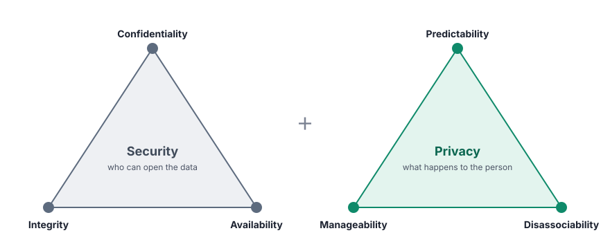
These three goals come from the privacy engineering objectives of the National Institute of Standards and Technology (NIST), in NIST Interagency Report (NISTIR) 8062. The NIST Privacy Framework uses them too.
- Predictability. People, owners and operators can make reliable assumptions about personal data and its processing, so there are no surprises.
- Manageability. The organization can manage personal data in detail, for example correct it, delete it or limit it to some uses.
- Disassociability. The organization can process data without a link to a person or a device beyond the needs of the task. Anonymization and the other privacy enhancing technologies (PETs) work here.
The difficult problem of data in use
Data exists in three states. Security tools for the first two states are mature. The third state is where privacy risk now sits.
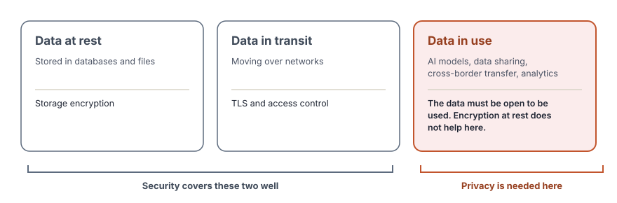
- Data at rest has protection from storage-level encryption.
- Data in transit has protection at the access level, for example Transport Layer Security (TLS) and access control.
- Data in use is in AI models, data sharing, cross-border transfers and analytics. Any use of data requires open data, so encryption at rest does not help.
The security triad covers data at rest and in transit well. The privacy triad is necessary for data in use.
When data is in use, the question changes. It is no longer about who can open the data. It is about what somebody can learn about a person from it. Privacy threat modeling measures this, and privacy enhancing technologies reduce it.
The course mapped to the DPDP Act and Rules
This picture summarizes the whole course. It follows the data of a Data Principal from collection to the point where a business can use it freely.
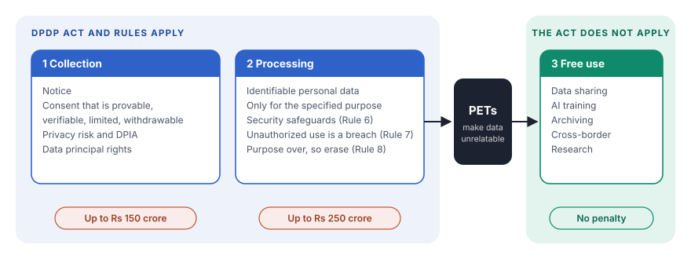
1. Collection and governance, inside the Act and Rules. This stage needs a notice, consent, a check of privacy risk, a Data Protection Impact Assessment (DPIA) and support for data principal rights (DPR). Consent must be provable, verifiable, limited to the purpose and withdrawable. The course places the penalty band here at up to 150 crore Indian rupees (Rs).
2. Processing of personal data, inside the Act and Rules. The data is identifiable personal data. The course links this stage to draft Rule 13(5), Act Sections 2(t) and 3 and draft Rule 6(d). It also links it to draft Rule 12(3), and to Act Section 17(2)(b) with draft Rule 15.
- Processing is limited to the specified purpose (Act Section 6).
- Relatable personal data (Rule 6(a)) must have security safeguards (Rule 6).
- Any unauthorized processing or loss (Act Section 2(u)) is a breach (Rule 7).
- When the purpose ends, the organization must delete the data (Rule 8).
The penalty band here is up to Rs 250 crore.
3. Data made unrelatable by PETs, outside the Act and Rules. Four routes lead out of the scope of the Act. These are non-applicability of the Act, continuity beyond a CIA compromise, algorithmic use, as well as statistics and research. Unrelatable data (Act Sections 2(t) and 3) is free for data sharing, AI model training, archiving, cross-border transfer and more. This is called continued processing, and no penalty applies.
The DPDP Act covers only data about an identifiable person (Section 2(t)). PETs can make data truly unrelatable to any person. The data is then no longer personal data, and the business can continue to use it, for example for AI. PETs are the bridge from heavily regulated data to data that is free to use.
Rule numbers in this picture. Draft Rule 12(3) on algorithmic due diligence by Significant Data Fiduciaries is Rule 13(3) in the final Rules. Draft Rule 15 on research, archiving and statistics is Rule 16. Rules 6, 7 and 8 keep their numbers. In the original picture, clock icons mark the items with a time limit, namely consent retention, breach reporting and erasure.
Privacy as a profit center
The course argues that privacy must not be only a cost. It places privacy work on two axes. The first goes from governance to risk mitigation, and the second from compliant operations to new revenue.
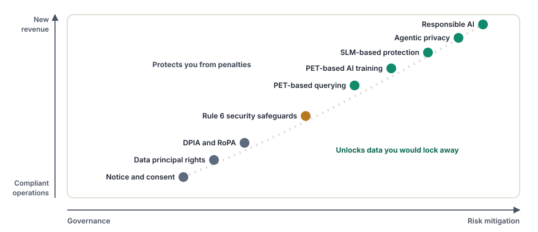
| Area | Activities, from low value to high value |
|---|---|
| Compliant operations (governance side) | Notice and consent, data principal rights, DPIA and the Record of Processing Activities (RoPA) |
| Security safeguards (the middle) | Reasonable security safeguards under Rule 6 |
| New revenue (risk mitigation side) | PET-based querying, PET-based AI training, protection with small language models (SLMs), agentic privacy and responsible AI |
Compliance work keeps an organization away from penalties. PETs let it use data safely that otherwise stays locked, and that opens new business.
A 2025 approach to privacy, not a 2016 one
The course contrasts privacy in 2016 with privacy in 2025. In 2016, privacy meant form filling, checklists and templates. In 2025, privacy is centered on safeguards and built into the systems. The innovation chart below shows the reason for this change.
![A two by two chart of market and technology. Incremental innovation, with an existing market and existing technology, holds static notice and consent, template-based DPIA, masking and pseudonymization, and PII found by column name. This is privacy in 2016. Architectural innovation holds NER-based LLM security. Disruptive innovation holds agentic DPIA, privacy enhancing technologies and privacy threat modeling. Radical innovation holds SLMs that guard LLMs, prevention of adversarial AI attacks, RAG privacy and security, pseudonymous inference, agentic responsible AI operations and agentic AI red teaming. Privacy in 2025 moves toward the disruptive and radical quadrants.](../assets/img/diagrams/pc-innovation-chart.svg)
| Type of innovation | Examples |
|---|---|
| Incremental (existing market, existing technology), the approach of the 2010s | Static notice and consent, template-based DPIA, masking and pseudonymization, classification of personally identifiable information (PII) by column name |
| Architectural (new market, existing technology) | Security for large language models (LLMs) based on named entity recognition (NER) |
| Disruptive (existing market, new technology) | Agentic DPIA, privacy enhancing technologies, privacy threat modeling |
| Radical (new market, new technology) | SLMs that guard LLMs, prevention of adversarial AI attacks, privacy and security for retrieval-augmented generation (RAG), pseudonymous inference, agentic responsible AI operations, agentic AI red teaming |
Three circles of the field
The course describes this field with three circles that overlap.
- The reason is data in use.
- The places are data at rest and data in transit.
- The method. Privacy threat modeling (PTM) measures the risk, and PETs and responsible AI (RAI) reduce it.
The full-stack AI TRiSM picture
AI Trust, Risk and Security Management (AI TRiSM) is a term from Gartner. The course presents the field as a staircase, with one step for each stage of the data and AI life cycle.
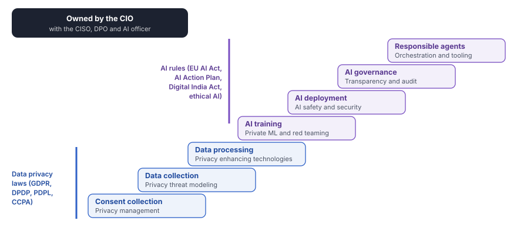
| Stage | Capability |
|---|---|
| Consent collection | A privacy management system and a consent agent |
| Data collection | Privacy threat modeling with dataset and document scanners, a DPIA workflow and a DPIA agent |
| Data processing | Privacy enhancing technologies such as anonymization, encryption, differentially private queries and private set intersection |
| AI training | Privacy-preserving machine learning (PPML), synthetic data and AI red teaming |
| AI deployment | AI safety and security, with an AI firewall and private RAG |
| AI governance | Transparency and audit, with AI impact assessment and governance |
| Responsible agents | Orchestration and tooling for AI agents |
Most of the agents were still in development when the course material was made.
The lower steps answer to data privacy laws such as the GDPR and the DPDP Act. Others are the Personal Data Protection Law (PDPL) of Saudi Arabia and the California Consumer Privacy Act (CCPA). The upper steps answer to AI rules such as the EU AI Act, the AI Action Plan, the Digital India Act and ethical AI principles. The Chief Information Officer (CIO) owns all of it. The Chief Information Security Officer (CISO), the DPO and the AI officer report to the CIO. An enterprise can be an AI taker, an AI shaper or an AI maker.
The course also shows the same idea as a pipeline. Structured data flows from consent collection into a database. It then goes through a dataset risk scanner, a DPIA and the PETs, namely anonymization, synthetic data, encryption and differentially private queries. Last, it goes through an AI impact assessment, an AI firewall and private RAG before it reaches the user.
Unstructured data flows from consent collection into a data lake. It then goes through a document risk scanner, a DPIA, private RAG and an AI impact assessment. A risk gauge follows each step.
The first owners along the way are the DPO and the Vice President (VP) of Data Governance. Then come the RAI Officer, the team for LLM operations (LLMOps) or the CISO, all under the CIO. The first half follows data privacy laws and the NIST Privacy Framework. The second half follows AI laws and the NIST AI Risk Management Framework (AI RMF).
The impact claimed by the course
- Threat modeling and DPIA. Complete in minutes, and agentic DPIA makes it faster. It costs less and it is provable and auditable. It is also more accurate than traditional methods. For quasi-identifiers, the claim is 20 times more accurate.
- RAG privacy and security. Five times more accurate than the closest competitor and ten times cheaper than weaker hyperscaler tools. It uses pseudonymized integration with external LLMs, and re-identification happens locally during inference.
- Expert anonymization. More than 50 times faster than traditional HIPAA privacy vendors, in minutes rather than days. Traditional methods cost about 50,000 US dollars for each flow. It gives provable mathematical guarantees and meets global compliance requirements.
These figures are claims of the course provider, not my own measurements.
Career roles
The course lists five roles that use these skills.
- CDPO Chief Data Protection Officer
- CIO Chief Information Officer
- CTO Chief Technology Officer
- RAI Officer Responsible AI Officer
- CRO Chief Risk Officer
Personal data, defined
The course breaks the legal definition into three parts, so that each part gets attention.
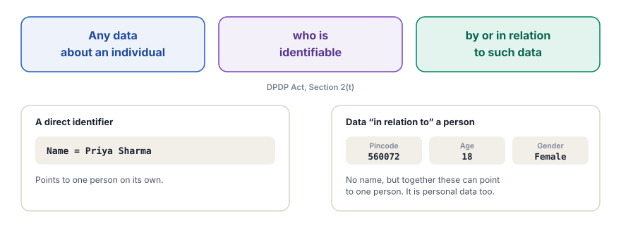
"personal data" means any data about an individual who is identifiable by or in relation to such data;
The phrase "in relation to" is broad. Data does not need a name to be personal. If anybody can link it to a person, it is personal data. For example, a pincode, an age and a gender together can point to one person. For this reason, the course spends much time on quasi-identifiers and linkage attacks (Part 3).
A notice that stands alone
Before a Data Fiduciary asks for consent, it must give the Data Principal a notice.
The notice must be presented and be understandable independently of any other information that the Data Fiduciary has made or may make available.
In practice, the privacy notice cannot be hidden inside the terms of service.
The content of a notice (Act Section 5, Rule 3).
- An itemized description of the personal data that is collected.
- The specified purpose of the collection.
- An itemized description of the goods or services that the processing provides, or the uses that it enables.
- A link to the website or app where the person can withdraw consent and exercise rights, that is, a data subject rights portal.
- A link or other means to complain to the Data Protection Board (grievance redressal).
The final Rules keep this structure. Rule 3 also requires clear and plain language, and it requires that withdrawal of consent is as easy as giving it.
Consent that the organization can prove
Where a consent given by the Data Principal is the basis of processing of personal data and a question arises in this regard in a proceeding, the Data Fiduciary shall be obliged to prove that a notice was given by her to the Data Principal and consent was given by such Data Principal to the Data Fiduciary in accordance with the provisions of this Act and the rules made thereunder.
The burden of proof is therefore on the company, and a checkbox in a log file is weak evidence. The course showed a sample consent artifact. It is an Extensible Markup Language (XML) record from the Consent Tech Framework v1.1 of the Ministry of Electronics and Information Technology (MeitY). The record holds the data principal, the fiduciary, the data items, the purpose, the time and a signature block. With this record, anybody can check a consent later.
Breach, processing and the penalty schedule
"personal data breach" means any unauthorised processing of personal data or accidental disclosure, acquisition, sharing, use, alteration, destruction or loss of access to personal data, that compromises the confidentiality, integrity or availability of personal data;
"processing" in relation to personal data, means a wholly or partly automated operation or set of operations performed on digital personal data, and includes operations such as collection, recording, organisation, structuring, storage, adaptation, retrieval, use, alignment or combination, indexing, sharing, disclosure by transmission, dissemination or otherwise making available, restriction, erasure or destruction;
The consent given by the Data Principal shall be free, specific, informed, unconditional and unambiguous with a clear affirmative action, and shall signify an agreement to the processing of her personal data for the specified purpose and be limited to such personal data as is necessary for such specified purpose.
The six qualities of valid consent. Consent is free, specific, informed, unconditional, unambiguous and given by a clear affirmative action. It also covers only the data that the specified purpose needs.
The Schedule of the Act, under Section 33, gives the maximum penalties.
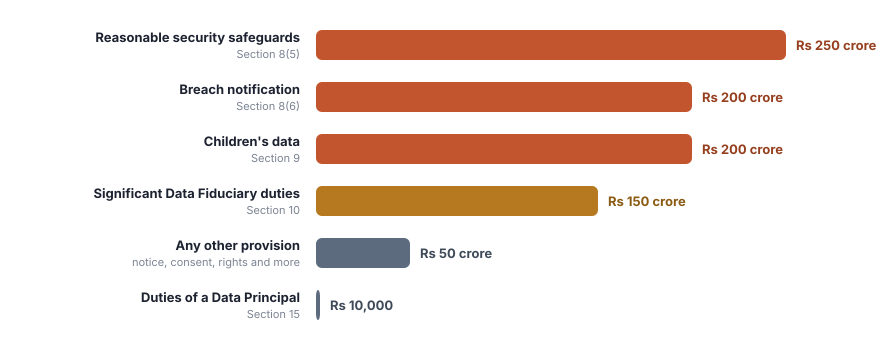
| No. | Breach of | Penalty up to |
|---|---|---|
| 1 | The obligation to take reasonable security safeguards to prevent a personal data breach (Section 8(5)) | Rs 250 crore |
| 2 | The obligation to inform the Board or the affected Data Principals of a breach (Section 8(6)) | Rs 200 crore |
| 3 | The additional obligations for children (Section 9) | Rs 200 crore |
| 4 | The additional obligations of a Significant Data Fiduciary (Section 10) | Rs 150 crore |
| 5 | The duties of the Data Principal (Section 15) | Rs 10,000 |
| 6 | A term of a voluntary undertaking that the Board accepted (Section 32) | Up to the penalty for the original breach, for which proceedings started under Section 28 |
| 7 | Any other provision of the Act or the Rules | Rs 50 crore |
The largest penalty (Rs 250 crore) is not for a breach itself. It is for a failure to have reasonable security safeguards. For this reason, the course links every privacy enhancing technology to reasonable security safeguards.
Five rights of a Data Principal
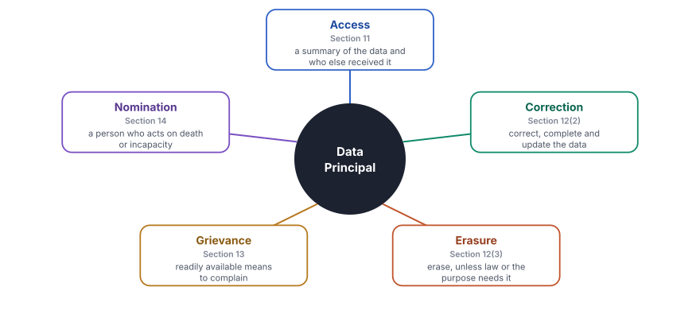
| Right | Act section | Meaning |
|---|---|---|
| Access to information about personal data | Section 11 | A summary of the personal data and the processing activities, and the identities of the other fiduciaries and processors that received it. |
| Correction, completion and updating | Section 12(2) | Correction of wrong data, completion of incomplete data and updating of old data. |
| Erasure | Section 12(3) | Erasure of the data, unless the specified purpose or a law needs it. |
| Grievance redressal | Section 13 | Readily available means to complain to the Data Fiduciary or the Consent Manager. The fiduciary must publish its time limit for the resolution of grievances. |
| Nomination | Section 14 | Nomination of another person who can exercise these rights after death or in case of incapacity. |
The course also showed the text of Sections 11 to 14 with the key phrases marked, such as "right to correction, completion, updating and erasure of her personal data", "readily available means of grievance redressal" and "in the event of death or incapacity".
In the final Rules, Rule 14 (draft Rule 13) covers rights and grievances. Rule 14(3) sets 90 days as the maximum time to respond.
Consent across the data ecosystem
This picture connects all of Part 2 to the later parts.
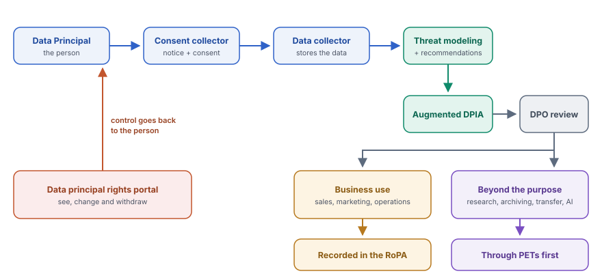
- The Data Principal receives a notice and gives consent. A consent collector records it.
- A data collector stores the personal data.
- Privacy threat modeling and its recommendations feed an augmented DPIA, which a DPO reviews.
- Approved flows then take one of two routes. Business uses such as sales, marketing and operations go into the RoPA. Uses beyond the original purpose go through privacy enhancing technologies first. These uses are continued processing, storage, research and archiving, cross-border transfer and AI model training.
- The rights portal connects back to the Data Principal, who can then see and control the use of the data.
Signatures, verifiable claims and zero knowledge proofs
The course showed three ways to make consent provable.
A digital signature. After consent, the user receives an email from the consent manager. It lists the purposes of the consent, for example sales, marketing, finance, analytics, product development and customer service. It also gives a Consent Reference identifier (ID) and a unique digital signature, which is a long signed string.
A "Manage" button lets the user verify, change or withdraw the consent later. This is what makes Section 6(10) provable, because the signature is the proof.
Verifiable claims. These follow the Verifiable Credentials model of the World Wide Web Consortium (W3C).
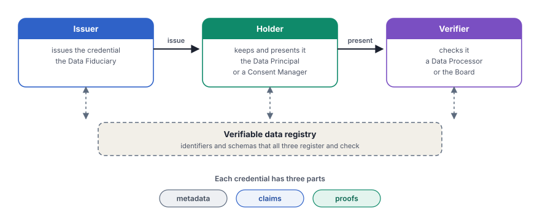
- The issuer issues credentials. Here, it is the Data Fiduciary.
- The holder acquires, stores and presents credentials. Here, it is the Data Principal or a Consent Manager.
- The verifier verifies credentials. Here, it is a Data Processor or the Board.
All three register and check identifiers and schemas against a shared verifiable data registry. A verifiable credential has three parts, namely the credential metadata, the claims and the proofs.
A zero knowledge proof (ZKP). A ZKP proves that a statement is true and reveals nothing more. Part 4 explains the mechanism.
The three properties of a ZKP.
- Completeness. If the statement is true, an honest prover can convince an honest verifier.
- Soundness. If the statement is false, no cheating prover can convince an honest verifier, except with a very small probability.
- Zero-knowledge. If the statement is true, the verifier learns nothing beyond that fact. Formally, a simulator that knows only that the statement is true can produce a transcript that looks like a real conversation.
Verification of a consent and its versions. In the privacy management portal, the user selects "Verify Consent", enters the Consent Reference ID and the digital signature, and submits them. The result reads "Verification successful" and lists the active purposes.
A versions table keeps every change, with the consent ID, the application, the purposes, the withdrawn ID, the version number, the status and the time. Each change creates a new version and leaves the old one intact.
The rights workflow
The Data Principal raises a ticket in the portal for each right. The ticket types are access to information, correction of data, erasure of data, nomination of a person, withdrawal of consent for purposes and a grievance. A grievance form asks for the ticket, the reason for escalation, the status of the issue and further comments.
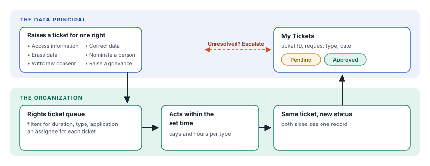
Both sides see the same tickets. The user sees them under "My Tickets", with the ticket ID, the request type, the date and the status, for example Pending or Approved. The administrator sees them on the internal platform in a rights ticket queue, with filters for duration, request type and application. Each ticket has an assignee.
Setting up a consent platform
The course showed the setup of a consent platform from the side of the administrator. The admin area has four tabs, namely Consent Apps, App Purposes, App Policies and Cookies.
Retention and erasure
(1) A Data Fiduciary of a class specified in the Third Schedule shall erase personal data, unless its retention is necessary for compliance with any law, if the Data Principal neither approaches the Data Fiduciary for the specified purpose nor exercises her rights for the time period given in that Schedule.
(2) At least forty-eight hours before that time period ends, the Data Fiduciary shall inform the Data Principal that the data will be erased, unless she logs into her account or otherwise contacts the Data Fiduciary.
A Data Fiduciary shall, unless retention is necessary for compliance with any law, (a) erase personal data when the Data Principal withdraws consent or as soon as it is reasonable to assume the specified purpose is no longer served, whichever is earlier; and (b) cause its Data Processor to erase any personal data made available to it.
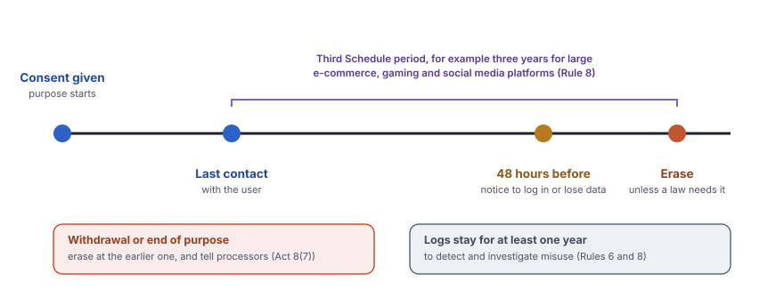
The Third Schedule covers large e-commerce, online gaming and social media platforms. Their period is three years from the last contact of the user. The final Rules also require fiduciaries to keep the related logs for at least one year.
Cookie banners
- Creation of a banner. Add a site, then complete the tabs for the website, language, design, texts, data subject rights, technologies and cookies. Select a layout and colors for the cookie logo, the primary and secondary colors, the accept and reject buttons and the table header.
- Preview. Turn on the preview to see the banner as visitors see it, then save or publish it.
- Cookie categories. Scan the website for cookies, or add them manually. Each cookie has a name, a domain, a path, an expiry, a vendor, a type, a description and the HttpOnly and Secure flags.
Cookie types. Strictly necessary, functional, performance, targeting and unclassified. In common practice, only strictly necessary cookies run before the user decides. The others wait for the choice of the user on the banner.
Duties of a Significant Data Fiduciary
The government can designate some fiduciaries as Significant Data Fiduciaries (SDFs). It considers the volume and sensitivity of the data that they process and the risk to people and to the country (Act Section 10(1)). SDFs have four additional duties under Section 10(2).
| Duty | Meaning |
|---|---|
| Data Protection Officer | Based in India and responsible to the Board of Directors or a similar governing body. The point of contact for grievances. |
| Independent data auditor | Evaluates the compliance of the SDF with the Act. |
| Data Protection Impact Assessment | Describes the rights of the Data Principals and the purpose of processing, and assesses and manages the risk to those rights. |
| Periodic audit | Regular audits that evaluate compliance. |
In the final Rules, Rule 13 (draft Rule 12) details these duties. It requires a DPIA and an audit once every twelve months, with a report to the Board. It also requires due diligence on algorithms, and it can limit the transfer of some data outside India.
The augmented DPIA
Periodic Data Protection Impact Assessment, which shall be a process comprising a description of the rights of Data Principals and the purpose of processing of their personal data, assessment and management of the risk to the rights of the Data Principals.
A traditional DPIA is a questionnaire in which people record their view of the risk. An augmented DPIA adds a measured, technical assessment of the risk in the actual data. It has three stages.
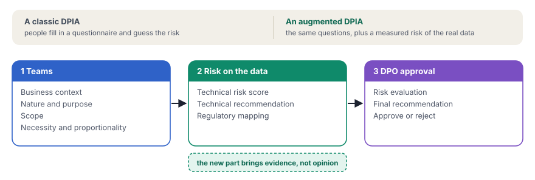
- Departments or teams. They give the business context, the nature and purpose, the scope as well as the necessity and proportionality.
- Risk assessment on the database. The tool gives the technical risk, a technical recommendation and a mapping to the law.
- DPO approval. The DPO evaluates the risk and gives the final recommendation, then approves or rejects.
The course illustrated this with two pictures. In the first, a tired person sits under a pile of paper questionnaires. In the second, a person works with an AI assistant on mitigation. The task is the same, with much less manual effort and better evidence.
Privacy threat modeling
PTM finds and measures privacy risk inside data, in both kinds of data. A dataset scanner reads structured databases, that is, tables. A document scanner reads unstructured data such as documents, files in the Portable Document Format (PDF) and text.
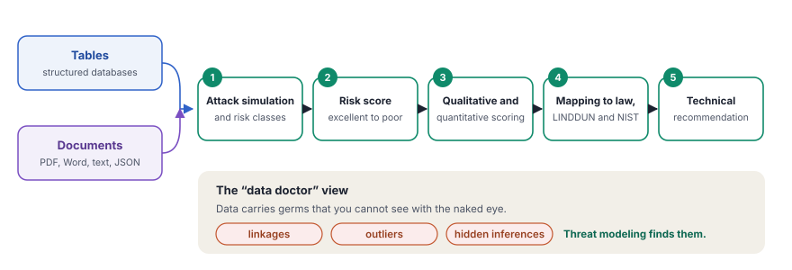
The first steps are attack simulation with risk classification, and a risk score on a gauge from excellent to poor. Qualitative and quantitative risk scoring follows, with a mapping to the law and to LINDDUN or NIST, and finally a technical recommendation.
The benefit. The course uses the image of a data doctor. Data carries germs that are invisible to the naked eye, namely linkages, outliers and hidden inferences, and these can easily compromise privacy.
With PTM, a DPO can diagnose and clean such data, which gives a healthier and safer data ecosystem.
Risk for each data flow. Data Security Posture Management (DSPM) checks the security posture against the security triad. PTM checks privacy against the privacy triad. The course placed the table of objectives from the NIST Privacy Framework next to the LINDDUN method.
LINDDUN is a privacy threat modeling method from KU Leuven (Katholieke Universiteit Leuven), a university in Belgium. Each letter is a type of threat, namely Linking, Identifying, Non-repudiation, Detecting, Data disclosure, Unawareness (and unintervenability) and Non-compliance.
The method models the system as a data flow diagram, finds the threats for each element and then selects mitigations. The report of the dataset scanner groups its advice under some of these threat names, namely linkability, identifiability, deniability and undetectability.
Measuring risk before data is shared
The course showed a risk score gauge that drops from 100 (high risk) to 10 (low risk) after safeguards are applied. For one type of attack, singling out, it claimed three values. These are an assessment 30 times faster, 95% validation of the PETs and protection from a penalty of up to Rs 250 crore.
The real questions concern how relatable the data is and which safeguard actually works. The course answered with the definitions of personal data (Section 2(t)) and breach (Section 2(u)), and with the table below. It is Table 6 of Opinion 05/2014 on anonymization techniques, from the Article 29 Working Party of the EU.
| Technique | Risk of singling out | Risk of linkability | Risk of inference |
|---|---|---|---|
| Pseudonymization | Yes | Yes | Yes |
| Noise addition | Yes | Possibly not | Possibly not |
| Substitution | Yes | Yes | Possibly not |
| Aggregation or k-anonymity | No | Yes | Yes |
| L-diversity | No | Yes | Possibly not |
| Differential privacy | Possibly not | Possibly not | Possibly not |
| Hashing or tokenization | Yes | Yes | Possibly not |
Pseudonymization leaves all three risks in place, so pseudonymized data is still personal data. No single technique removes every risk. The right choice depends on the attacks that matter for the data flow, and the organization must measure the result.
Eight kinds of privacy attack
The course places personal data in the middle, with eight attacks around it.
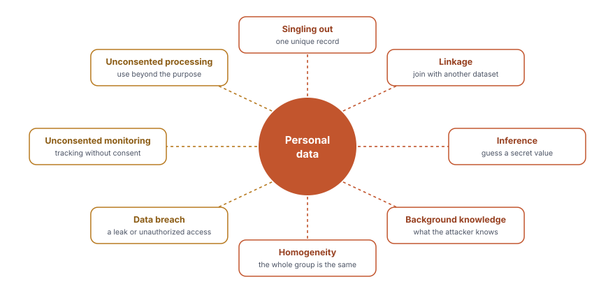
| Attack | Result |
|---|---|
| Singling out | One record is unique in the dataset, so the person behind it can be picked out. |
| Linkage | The attacker joins the dataset with another dataset (public, from the dark web or from social media) on shared fields and re-identifies people. |
| Inference | The attacker guesses a sensitive value with high confidence, even without the exact record. |
| Background knowledge | The attacker uses existing knowledge about a person to narrow the guess. |
| Collective privacy (homogeneity) | All people in a group share the same sensitive value, so the whole group is exposed. |
| Data breach | Data leaks, or somebody gains access without authorization. |
| Unconsented monitoring | People are tracked or observed without their consent. |
| Unconsented processing | Data is used for purposes to which the person did not agree. |
A real example. This happened during the coronavirus disease 2019 (COVID-19) pandemic. A state geospatial portal, the Karnataka Geographic Information System (K-GIS), published the locations of positive cases on a map. Electoral rolls are public, and they list the name, age, gender and house number for each constituency. Attackers could combine the map with these rolls and with social media profiles on Facebook, Instagram and LinkedIn. They could then re-identify individual patients.
This is re-identification through a linkage attack.
Direct and indirect identifiers
Direct identifiers are personally identifiable information and protected health information (PHI), for example the name, the phone number and the Aadhaar number. De-identification removes them.
Indirect identifiers are quasi-identifiers such as age, gender and pincode, as well as statistical data such as test results and conditions.
The example record from the course follows. The RT-PCR column holds the result of the reverse transcription polymerase chain reaction (RT-PCR) test.
| Age | Gender | Pincode | RT-PCR | Co-morbidity |
|---|---|---|---|---|
| 18 | Female | 560072 | Covid positive | D1, D2, D3, D4 |
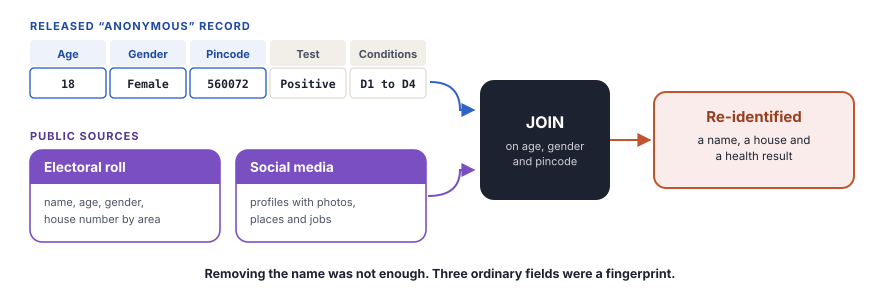
The name is gone. But possibly only one 18-year-old woman with this pincode took a test. The attacker matches the age, gender and pincode with a public or leaked dataset and finds her name. The removal of direct identifiers is not enough. This is a singling out attack that linkage makes possible.
Inference and homogeneity attacks
Now suppose that the data is generalized, so that the age is a range.
| Age | Gender | Pincode | RT-PCR |
|---|---|---|---|
| 18-24 | Female | 560072 | Covid positive |
| 18-24 | Female | 560072 | Covid positive |
| 18-24 | Female | 560072 | Covid positive |
Inference attack. The attacker reasons as follows. "My target took an RT-PCR test, and I know her quasi-identifiers. I cannot tell which row is hers. But every row with her quasi-identifiers is Covid positive, so she is positive." The attacker never found the record, but the secret leaked.
Collective privacy or homogeneity attack. With five identical positive rows, the attacker says "It is easy. I can target anybody. Free lunch." The course showed a shark facing a school of fish. When the whole group looks the same, the whole group is exposed.
Location privacy
The course gave a simple method for location data.
- Start with the sensitive Global Positioning System (GPS) coordinates of patients.
- Anonymize them with a rule, for example at least 10 positive cases within a radius of 1 km.
- Share the privacy-preserved coordinates for visualization and research.
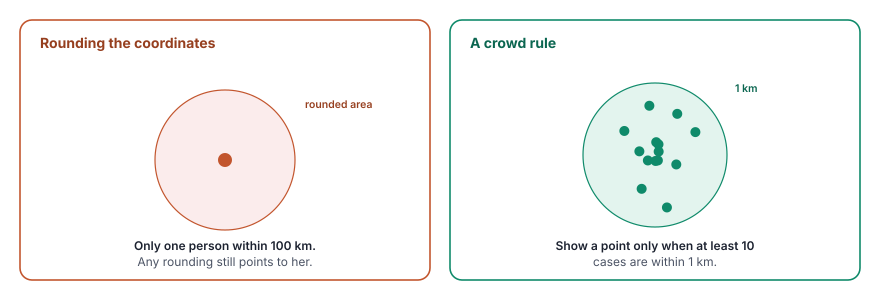
Simple tricks such as rounding the coordinates are blind to context and to privacy. A rounded location still points to a person who is the only resident within 100 km. The protection must depend on the number of other people nearby.
k-anonymity, l-diversity and t-closeness
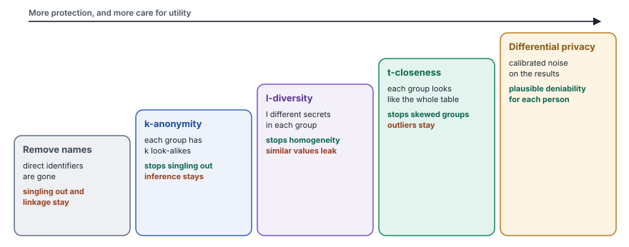
k-anonymity. Every combination of quasi-identifiers must occur at least k times. Then nobody can single out a record.
| Age | Gender | Pincode | RT-PCR | Co-morbidity |
|---|---|---|---|---|
| 18-24 | Female | 560072 | Covid positive | D4 |
| 18-24 | Female | 560072 | Covid positive | D1, D2 |
| 18-24 | Female | 560072 | Covid positive | D1, D2, D3, D4 |
Here k is 3, so a singling out attack is not possible. But the sensitive column reads "Covid positive" in all rows, so inference still works.
t-closeness. The sensitive values in each group must resemble the whole population. Suppose that the group of five has three positive and two negative results. The attacker then concludes "I cannot say. I learned nothing from this dataset."
The course showed this as a school of different animals, namely a jellyfish, a whale, a turtle and a fish. The shark cannot treat the group as one.
| Age | Gender | Pincode | RT-PCR |
|---|---|---|---|
| 18-24 | Female | 560072 | Covid positive |
| 18-24 | Female | 560072 | Covid positive |
| 18-24 | Female | 560072 | Covid positive |
| 18-24 | Female | 560072 | Covid negative |
| 18-24 | Female | 560072 | Covid negative |
A differentially private mitigation. The last step is a bar chart of a disease distribution. It includes asthma, Covid-19, cancer, diabetes, Ebola, flu, the human immunodeficiency virus (HIV), heart disease and hepatitis. It also includes hypertension, kidney disease, Middle East respiratory syndrome (MERS), sexually transmitted diseases (STDs), tuberculosis (TB) and Zika.
The old distribution stands next to a new one with noise. The bars change very little, but the attacker learns nothing certain. The overall picture stays useful, and nobody can confirm a single person.
l-diversity was named in the course but not explained. It requires that each group of matching quasi-identifiers holds at least l different sensitive values. It stops the homogeneity attack above, where all rows are positive.
It can still leak when the values are different but similar, for example lung cancer and stomach cancer. It can also leak when one value is much more common. t-closeness goes further and compares the whole distribution in the group with the distribution in the whole table.
Scanning a dataset for privacy risk
The course showed the operation of a dataset risk scanner, step by step.
Column classes. The classes are PII (name, email, phone, Aadhaar, Permanent Account Number or PAN, and address), quasi-identifier (zip code, age, gender), time (date of birth, time stamps), unique identifier (Goods and Services Tax or GST number), statistical data (turnover, asset worth, education), sensitive statistical data (for example the state), statistical numeric and statistical text. Each class has a risk level, which is 100 for PII and lower for the others.
Manual and hybrid files. These are simple comma-separated values (CSV) files with three columns, column_name, attribute_sub_type and attribute_type. They also carry three thresholds, k_value = 5, t_value = 0.5 and outlier_value = 0.2.
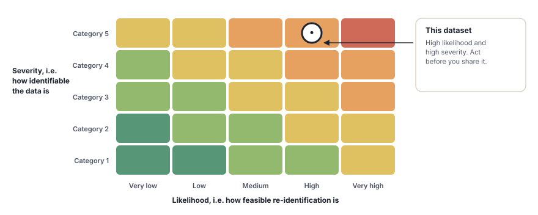
| Output | Meaning |
|---|---|
| Risk score (0 to 100) | A qualitative score of the privacy risk of the dataset. In the example, 100. |
| Risk index (0 to 2500+) | A quantitative measure of the overall privacy risk. In the example, 930. |
| Likelihood and severity matrix | Severity is the identifiability of the data (categories 1 to 5). Likelihood is the feasibility of re-identification (very low to very high). Green is low risk and red is high risk. A marker shows the position of the dataset. |
| Technical safeguards (PET mitigation) | Based on the LINDDUN threat model and grouped by linkability, identifiability, deniability and undetectability. Each item gives its applicability (for example "Strong compliance"), the law (DPDP Act 8(4), draft Rule 6(1)(d)) and a recommendation. For example, "For datasets with sensitive user attributes and a risk score greater than 20, explore a suitable PET like context-based anonymization to protect against linkage attacks." |
| Key recommendations | Grouped under the five functions of the NIST Privacy Framework, namely Identify, Govern, Control, Communicate and Protect. The categories include policies and procedures, risk strategy, awareness and training, grievance management, then monitoring and review. The legal reference is DPDP Act 4(1). |
Output files. The scanner produces an attribute risk chart. It also produces a CSV file for each technique, namely the k-table, the outliers, the numeric outliers and an outlier summary.
Images show the likelihood and severity matrix, the linkability and inference attacks, the singling out attack, the risk score and the quality risk. The full report comes as a PDF. A CSV holds the assessed dataset, and sample JavaScript Object Notation (JSON) supports integration. Further CSV files hold the singling out and linkage inference results.
Integration. A JSON output gives the regulation, the risk score, the risk index and the technical configuration (k, t and outlier). It also gives each attribute with its name, sub-type, type, risk level and confidence. A Representational State Transfer (REST) application programming interface (API), POST /jobs/create, starts a job. It takes a job name, a configuration type (AUTO or MANUAL), the regulation, a cross-border flag (true or false) and the dataset file.
A DPIA built on measured risk
The dashboard shows graphs of the DPIAs. It groups them by a custom template under a "dictionary" (for example Sales) and by status (under review, approved, rejected). When the template uses weighted questions, it also groups them by risk (low, medium, high).
Creation of a DPIA job.
- Open the jobs list and select "New Job". Enter a job name.
- Select the link for the DPIA, which is none, a scanned data flow or a consented RoPA entry (a consent application).
- Select whether to use the default DPIA questionnaire template.
- Select the job of the dataset scanner. Its risk score and index arrive automatically.
- Answer the questions section by section, namely Nature, Purpose, Context and Scope, followed by Necessity and Proportionality. The questions address the data subject, the data controller and the data processor. Many use a scale from 1 to 5, for example from "less necessary" to "more necessary".
- Submit when all sections are complete.
Review and approval. The reviewer opens the job and goes through three steps. The first is the assessment overview with the answers.
The second is the scan result, with gauges and recommendations whose parts the reviewer can select for feedback. The third is the approval, with a recommendation for process mitigation, comments and a choice to reject or approve. After approval, the report is available for download.
Scanning documents
Create a new job for the document scanner and name it. Select a database connection or upload a file in Word, PDF, JSON or text format, then submit. The scanner finds personal and sensitive data in documents such as health records or loan documents. It reports the risk in the same way as the dataset scanner does for tables.
Input PETs and output PETs
The course sorts PETs on two axes. Input PETs protect the data during computation. Output PETs protect the released result. The second axis is the mode of use, either non-interactive data sharing (high volume, low frequency) or interactive data querying (low volume, high frequency).
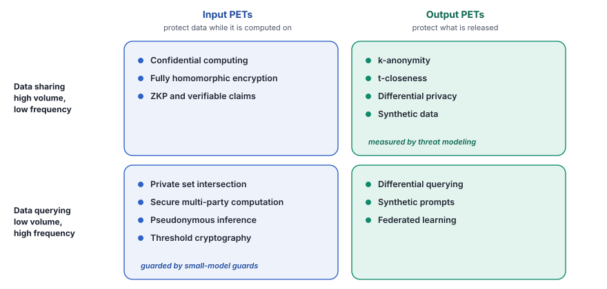
| Input PETs | Output PETs | |
|---|---|---|
| Data sharing | Confidential computing, fully homomorphic encryption (FHE), ZKP and verifiable claims | k-anonymity, t-closeness, differential privacy (DP) and synthetic data, measured by threat modeling |
| Data querying | Private set intersection (PSI), secure multi-party computation (SMPC), pseudonymous inference and threshold cryptography, guarded by SLM guards | Differential querying, synthetic prompts and federated learning |
The course also marked which of these were live products and which were early versions, or minimum viable products (MVPs), at the time.
The data spectrum
This scale goes from PII to input privacy. At the left end, the risk is high. The regulation and the overheads are high too. At the right end, the risk is low.
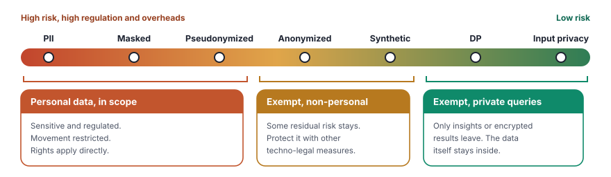
| Zone | Data | Legal status |
|---|---|---|
| In scope of regulation, personal data | PII, masked, pseudonymized | Sensitive and regulated. Movement is restricted at many levels. Data subject rights apply directly. |
| Exempt from regulation, non-personal data or insights | Anonymized, synthetic | Some residual risk remains, and other techno-legal measures must protect it. |
| Exempt, privacy-preserved data query | DP, input privacy | Only insights or encrypted computations leave. These are input privacy technologies. |
Masking compared with PETs. The course calls masking "peekaboo privacy". It showed an elephant with a leaf over its face and asked the audience to guess the animal. To hide part of the data does not hide the identity behind it. A PET gives a privacy guarantee with mathematical proofs, like a cloak of invisibility.
Reasonable security safeguards
The DPDP Rules turn reasonable security safeguards into a concrete list. The course arranged them in two groups.
| Goal | Rule | Safeguards |
|---|---|---|
| Protect confidentiality, integrity and availability | Rule 6(1)(a) and the following clauses | Encryption, access control, logs and analysis, log backup, data backup, contracts and organizational measures |
| Continue the processing even if CIA is compromised (fiduciary or processor) | Rule 6(1)(d), with Act Sections 2(t), 2(u) and 33(2) | Anonymization, synthetic data, differential privacy and SMPC |
A Data Fiduciary shall protect personal data in its possession or under its control, including processing by its Data Processor, by taking reasonable security safeguards, which shall include at least:
- appropriate data security measures, including securing such personal data through its encryption, obfuscation or masking or the use of virtual tokens mapped to it;
- appropriate measures to control access to the computer resources used;
- visibility on access through appropriate logs, monitoring and review, to detect, investigate and remediate unauthorised access;
- reasonable measures for continued processing in the event of confidentiality, integrity or availability being compromised, including by way of data backups;
- retaining such logs and personal data for a period of one year, unless law requires otherwise, to enable detection of unauthorised access and its investigation and remediation;
- appropriate provision in the contract with a Data Processor for taking reasonable security safeguards;
- appropriate technical and organisational measures to ensure effective observance of security safeguards.
- the nature, gravity and duration of the breach;
- the type and nature of the personal data affected;
- whether the breach is repetitive;
- whether the person, as a result of the breach, has realised a gain or avoided a loss;
- whether the person took any action to mitigate the effects and consequences of the breach, and the timeliness and effectiveness of such action;
- whether the monetary penalty is proportionate and effective, having regard to the need to secure observance of and deter breach of the Act;
- the likely impact of the penalty on the person.
Clause (e) of Section 33(2) is important for a DPO. Proof of strong and timely mitigation, for example with PETs, can reduce the penalty even when something goes wrong.
Expert-grade anonymization
An anonymization engine moves data from the personal zone of the spectrum to the anonymized zone. The threat modeling score then turns from red to green. The example from the course uses k = 2, with ages, genders and Zone Improvement Plan (ZIP) codes.
Before
| Age | Gender | ZIP | Disease |
|---|---|---|---|
| 28 | Male | 10001 | Flu |
| 28 | Male | 10001 | Asthma |
| 35 | Female | 20002 | Diabetes |
| 35 | Female | 20002 | Hypertension |
| 45 | Male | 30003 | Cancer |
| 45 | Male | 30003 | Flu |
| 50 | Female | 40004 | Asthma |
| 50 | Female | 40004 | Diabetes |
After (k = 2)
| Group | Age | Gender | ZIP | Disease |
|---|---|---|---|---|
| 1 | 20-30 | Male | 100** | Flu |
| 1 | 20-30 | Male | 100** | Asthma |
| 2 | 30-40 | Female | 200** | Diabetes |
| 2 | 30-40 | Female | 200** | Hypertension |
| 3 | 40-50 | Male | 300** | Cancer |
| 3 | 40-50 | Male | 300** | Flu |
| 4 | 50+ | Female | 400** | Asthma |
| 4 | 50+ | Female | 400** | Diabetes |
A short history of anonymization
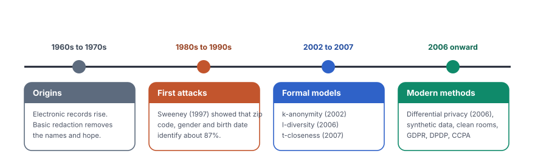
- 1960 to 1970, the origins of data privacy. Electronic data processing grew, with basic data redaction. People believed that the removal of direct identifiers (PII) was enough.
- 1980 to 1990, de-identification and the first attacks. Basic anonymization only removed PII. In 1997, the well-known work of Latanya Sweeney re-identified about 87 percent of people with only the zip code, the gender and the birth date.
- 2002 to 2007, formal privacy models. k-anonymity (Samarati and Sweeney, 2002), l-diversity (Machanavajjhala and others, 2006) and t-closeness (Li and others, 2007).
- The modern trend. Differential privacy (Dwork, 2006), synthetic data generation (privacy by design) and data clean rooms. Global laws such as the GDPR, the DPDP Act of India and the CCPA of California all define anonymization legally.
Anonymization in the law
| Law | Definition or method |
|---|---|
| GDPR (Recital 26) | Information which does not relate to an identified or identifiable natural person, or personal data rendered anonymous in such a manner that the data subject is not or no longer identifiable. |
| HIPAA (164.514(b)), Safe Harbor method | Removal of 18 specific identifiers, for example the name, the Social Security Number (SSN), full dates and the ZIP codes of areas with fewer than 20,000 people, with no actual knowledge that the data can identify somebody. |
| HIPAA, Expert Determination method | A statistical expert certifies, with accepted statistical methods, that the risk of re-identification is very small. |
| PDPL (Saudi Arabia) | The process by which personal data is irreversibly altered so that individuals can no longer be identified directly or indirectly by any means, including by combining it with other datasets, now or in the future. |
Anonymization techniques
k-anonymity. A property of a dataset in which each record is indistinguishable from at least k−1 other records on certain attributes, the quasi-identifiers. For example, an attacker looks for a man in a released table and knows only his age and gender. The table has k men with the same age and gender, so the attacker cannot tell which one he is.
Generalization. A value is replaced with a broader one, so that records form groups. The ages 20, 21, 22, 23, 24 and 25 become "20–25 years".
Suppression. Parts of a value are replaced with a symbol such as an asterisk. The ZIP codes 47677, 47602 and 47678 all become "476**" and form one group. The gender can also be fully suppressed to "***".
t-closeness. A group, or equivalence class, has t-closeness when the distance between two distributions is not more than a threshold t. The first is the distribution of a sensitive attribute in the group, and the second is its distribution in the whole table. A table has t-closeness when all its groups have it.
In the example of the course, the distances of the groups are 0.252, 0.276 and 0.104. All are below the threshold of 0.35, so the table reveals less private data.
Differential privacy. After t-closeness, outliers can remain in the statistical data, and other attacks are still possible. A differentially private algorithm adds controlled noise to statistical results. It is then difficult to tell whether the data of any one person was in the input, which gives plausible deniability. Part 5 explains it in full.
Configuring an anonymization job
The course showed the configuration of a job in an anonymization engine.
Pseudonymization
- It replaces direct identifiers with pseudonyms, for example John becomes P001.
- It keeps the data useful for analytics.
- Unlike anonymization, an authorized party can reverse it under controlled conditions.
- Organizations use it for GDPR compliance and secure data sharing.
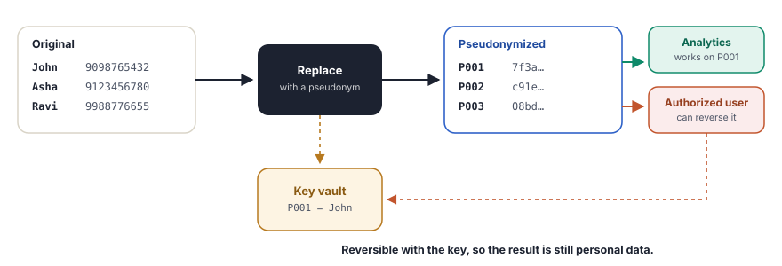
Modern data protection techniques.
- Advanced Encryption Standard in Galois/Counter Mode (AES-GCM). Authenticated encryption that gives confidentiality and integrity together.
- Format-preserving encryption (FPE). Encryption that keeps the format of the data. For example, a 16-digit card number stays 16 digits.
- Tokenization. The replacement of data with non-sensitive tokens, with the mapping in a lookup table.
- Use cases. Compliance in health care and banking.
A cell-level encryption tool sits on the pseudonymized part of the spectrum and encrypts data cell by cell. In the example, the names, PAN numbers and mobile numbers of 8 people are encrypted. An authorized user can decrypt one cell and recover, for example, 9098765432.
- Open the encryption tool from the PET group and select "New Job". The dashboard shows the records generated, the job status and a chart of the data type configuration.
- Enter a job name and a sample size, which must be more than zero and not more than the number of rows.
- Select the data source, either a database connection or a file upload.
- For each column, select the level (L1 or L2), the algorithm (AES or FPE) and the method (encryption or hash), then submit.
- Check the job status, open the summary (for example 17 columns with 0 kept, 17 encrypted and 0 hashed) and download the report.
- To decrypt, select a column, paste an encrypted value and select Decrypt. A preview shows the encrypted dataset.
Fully homomorphic encryption
- FHE allows computation directly on encrypted data.
- The raw data stays hidden, even during processing.
- It is based on lattice cryptography, which experts also consider resistant to quantum computers.
- Its use cases are encrypted machine learning, confidential processing in the cloud and analytics on encrypted data.
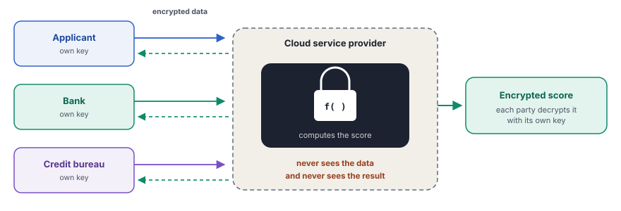
Example of an encrypted credit score. The applicant, the bank and the credit bureau each send their encrypted data to a cloud service provider (CSP). The CSP computes the credit score without decryption and returns an encrypted credit score.
Each party decrypts the score with its own key. The cloud provider never sees the data or the result. During the course, a Quick Response (QR) code led to a live FHE example that participants could try.
Zero knowledge proofs
- A ZKP proves possession of some information without revealing it.
- Its properties are completeness, soundness and zero-knowledge (Part 2).
- Its use cases are authentication, privacy-preserving identity checks (proof of an age of 18 or more without the date of birth) and voting on a blockchain.
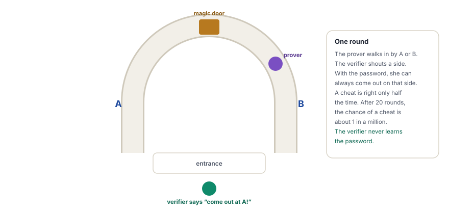
The cave picture is the classic "Ali Baba cave". A ring-shaped cave has two paths, A and B, joined by a magic door at the back. The prover enters by one path. The verifier waits outside and calls the path by which the prover must come out.
A prover who knows the password for the door can always come out on the correct side. A prover who does not know it is correct only half the time. After many rounds, the verifier is convinced, but never learns the password.
Example of a proof of bank balance. The bank gives the prover the balance. The prover generates a proof that the balance is above a threshold and sends only that proof to the verifier, for example a visa office. The verifier learns that the balance is above the threshold, and nothing about the actual amount.
My own certificate carries a "ZK Cert ID" at the bottom, which is a zero knowledge (ZK) certificate identifier. It is a small reminder that a verifier can check a credential with a proof, not only with trust.
Private set intersection and secure multi-party computation
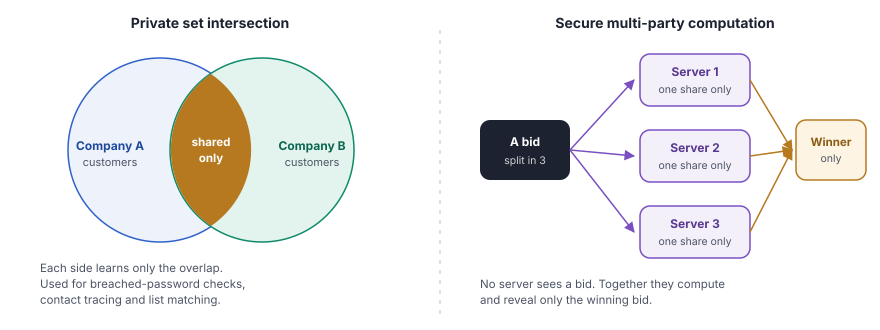
PSI. Two parties find the items that they have in common without revealing the rest of their data. PSI uses hashing, encryption or oblivious transfer.
Its use cases are checks for breached passwords, contact tracing and the comparison of marketing lists. For example, two companies find their common customers, and each one learns only the overlap.
SMPC. Several parties compute a result together, and each one keeps its input private. SMPC uses secret sharing or garbled circuits. Its use cases are joint analytics, privacy-preserving machine learning and secure auctions.
Example of a secure auction between different governing bodies. A client splits a bid into secret shares and sends one share to each of three servers. No single server can see the bid. The servers run the SMPC protocol together and reveal only the output, which is the winning bid.
Threshold cryptography
- It splits a cryptographic key across several parties.
- Only a subset of them, the threshold, is necessary to rebuild the key.
- Its use cases are secure key management and digital signatures.
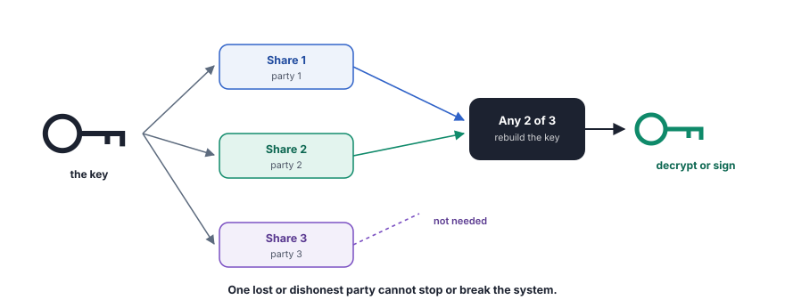
Example. A key is split into three shares, and three parties hold them. Any two of them can come together, generate the key and decrypt the message. The threshold here is 2, in a 2-of-3 scheme. One lost or dishonest party cannot stop or break the system.
This part of the course had three goals. The first was to understand how synthetic data makes safe data use possible. The second was to learn practical uses of differential privacy. The third was to study real use cases for compliance and innovation.
Synthetic data
Synthetic data is artificial data that looks and behaves like real data. A computer program generates it, so nobody collects it from real events. It reproduces the structure, the patterns and the statistics of the actual data, but it contains no real personal or sensitive information.
On the data spectrum, synthetic data is in the non-personal, unrelatable zone. The example from the course follows.
Real
| Name | Age | Salary |
|---|---|---|
| Deepak Sharma | 28 | 55,000 |
| Vinayak Ram | 34 | 62,000 |
| Amit Gupta | 26 | 47,000 |
| Ankit Bajaj | 42 | 80,000 |
| Vaishnav Kumar | 29 | 58,000 |
| Swati Singh | 39 | 72,000 |
Synthetic
| Name | Age | Salary |
|---|---|---|
| Suresh Kumar | 29 | 54,000 |
| Abhishek Singh | 35 | 61,000 |
| Sahil Godse | 27 | 48,000 |
| Ankur Bawa | 41 | 79,000 |
| Rohan Kumar | 30 | 59,000 |
| Neha Gupta | 38 | 71,000 |
The averages and the relation between age and salary stay the same, but no row is a real person.
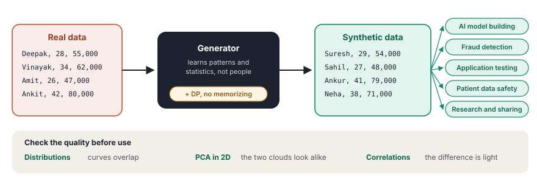
Market and legal basis
- Fortune Business Insights (September 2023) expects the market for synthetic data generation to exceed 2,339.8 million US dollars (USD) by 2030. It gives a compound annual growth rate (CAGR) of 31.1%.
- DataHorizzon Research expects the market to reach USD 6.9 billion by 2032.
- Synthetic data is not personal data if it does not relate to an identifiable individual.
- The risks of re-identification must still be assessed.
- The PDPC guidance on PETs governs it, with the use of anonymization techniques and governance controls.
Uses of synthetic data
Across the machine learning life cycle. Data sources include traditional business data, partner data, mobile apps and legacy data. They go through data preparation, with preprocessing, a training set and a testing set. They then go through model training, with network models, hyperparameters, deep learning frameworks, a trained model and deployment in production. A synthetic data generator can replace real data at the source or at the preparation step. The use cases follow.
- AI model building
- Fraud detection (finance)
- Application testing (operations)
- Protection of patient data (health care)
- Data collaboration (research, archives and statistics)
Development and testing. Developers need realistic data to test a new application. Instead of a copy of production data, the process below applies.
- The production database is real and sensitive.
- The schema and the constraints are extracted.
- A constraint-aware generator keeps the formats, the types, the edge cases and the relationships.
- A synthetic test database is safe and has a realistic structure.
- The quality assurance (QA) and development environments use it. These include the APIs, the extract, transform and load (ETL) jobs, the pipelines and the user interface (UI).
Research and statistics. Researchers want to study trends in a population without access to confidential records. Confidential population records go into a synthetic data generator that reproduces the structure and the statistics. The result is synthetic population data, statistically similar but without real individuals. Researchers and analysts then study the trends and publish.
Synthetic data with DP
A synthetic data generator can memorize rare real records and copy them into its output. DP techniques applied during generation prevent this and make the synthetic dataset more trustworthy.
Generating synthetic data and checking its quality
- The dashboard shows the records generated so far, with charts of the job status and the job configuration and the list of all jobs. The user selects "Create New Job".
- Upload. Enter the job name, the number of input samples (for example 1,000) and the number of samples to generate (for example 2,000). Then upload a file, or use a connector to select a source and an entity.
- Encoder configuration. The tool predicts an encoder type for each column, namely numerical, categorical, datetime, textual or pattern. The user can correct it.
- The example used a dataset of credit card fraud. Its columns included the distance from home, the distance from the last transaction and the ratio to the median purchase price. Other columns were repeat retailer, used chip, used personal identification number (PIN), online order and fraud.
The real data and the synthetic data are then compared.
| Check | Subject of the check | A good result |
|---|---|---|
| Cumulative distribution comparison | The cumulative sum curve of each column, real and synthetic on one chart | The better the overlap, the better the synthetic data |
| Principal component analysis (PCA) in two dimensions (2D) | The real and synthetic data on two principal components | The more alike the two plots, the closer the synthetic data is to the real data |
| Correlation comparison | The correlation matrices of the real and the synthetic data, with the difference between them | The lighter the difference matrix, the closer the synthetic data is to the real data |
Differential privacy
Differential privacy is a mathematical framework that protects the privacy of individuals in a dataset with controlled noise. It gives quantifiable privacy guarantees and balances the utility of the data with privacy.
In other words, DP shares information about a group. It describes patterns in the group and withholds information about specific individuals. It makes small random changes to individual data that do not alter the statistics of interest. Thus, nobody can use the data to learn much about one person.
Use cases. Data Principals feed a central database. Its data passes through DP before it reaches public relations for external sharing, and data science and other departments for querying.
A data clean room with insight privacy. Consider the query "COUNT of people with a salary above 2 lakh who bought car model A".
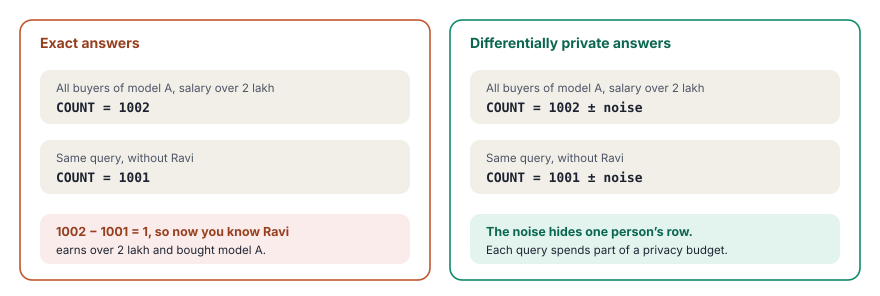
| Setup | Answer | Risk |
|---|---|---|
| A direct query on personal data, with no limit on queries | Exactly 1002 | High. Repeated queries that differ slightly can isolate one person. |
| A query through a differentially private service, with a query budget | 1002 ± N (noise added) | Low. The threat modeling score turns green. |
Exact counts leak. Suppose that 1002 people earn above 2 lakh and bought model A. The same query without one known person gives 1001. The salary and the purchase of that person are then known. Noise hides whether the row of one person changed the answer.
The privacy budget, epsilon and delta
The privacy budget measures the permitted loss of privacy. It works like a limit on the number of questions that anyone can ask a dataset before the privacy of individuals is at risk. Each query uses part of the budget.
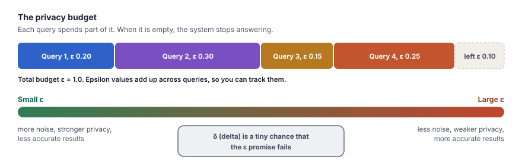
| Parameter | Meaning | Effect |
|---|---|---|
| Epsilon (ε) | The main DP parameter. It sets the permitted privacy loss for a query or a set of queries. | A smaller ε gives stronger privacy, more noise and less accurate results. A larger ε gives more accuracy and less privacy. The ε values add up across queries, so they can be tracked. |
| Delta (δ) | A small positive number in (ε, δ)-differential privacy. It covers the probability of a privacy breach. | ε keeps breaches small, and δ makes large breaches extremely unlikely. |
The smaller the epsilon, the stronger the privacy. All guarantees work within the limit that ε sets.
The formal definition. Take any two datasets D and D′ that differ in one person, and any set of outputs S. A mechanism M is (ε, δ)-differentially private if the following holds.
With δ = 0, this is pure ε-DP. For the Laplace mechanism, the noise scale is the sensitivity divided by ε. For a count, the sensitivity is 1, because one person changes the count by at most 1. Thus, with ε = 0.5 the noise scale is 2, and with ε = 0.1 it is 10.
Ways to apply DP
There are three ways, namely noise addition (randomness in the outputs), aggregation (combination of data so that single entries stay hidden) and data subsampling (use of subsets to reduce exposure).
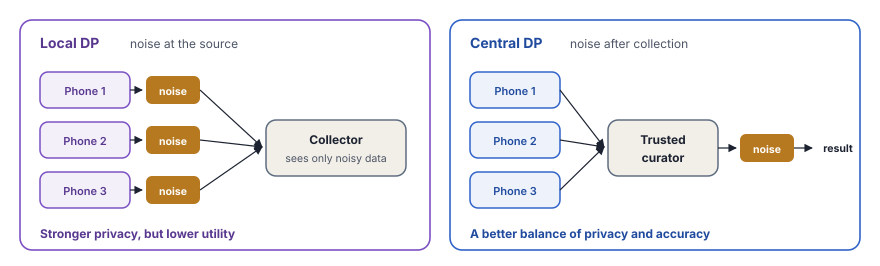
| Local DP | Central DP | |
|---|---|---|
| Place of the noise | At the source, for example on the device of the user | After collection, by a trusted curator |
| Trade-off | Stronger privacy, but it can reduce utility | A better balance of privacy and accuracy |
Mechanisms. The noise comes from a distribution chosen for the data type and the use case.
- Laplace mechanism. Best for numeric queries. It adds noise from a Laplace distribution.
- Gaussian mechanism. Suitable when a small relaxation of privacy is acceptable in exchange for better utility. It gives (ε, δ)-DP.
- Randomized response. For yes or no answers and categorical data. It adds controlled randomness to each answer.
Three DP techniques.
- Noise addition. Protects individuals and still allows accurate analysis and insights.
- Data perturbation. Changes the data to prevent identification and keeps the overall integrity of the dataset.
- Query restriction. Limits the types of queries, so that nobody can extract sensitive information about one person.
A differentially private query session
- Open the differentially private query service from the PET group. The records list shows the past sessions.
- Creation of a session. Enter a job name and upload the dataset, with a requirement file in YAML Ain't Markup Language (YAML) format. Set the total privacy budget (epsilon and delta), which is consumed over time, the privacy cost of each query and the DP algorithm.
- Query. Select the session, write a Structured Query Language (SQL) query such as a COUNT, submit it and read the noisy answer. Each query consumes budget. When the budget is exhausted, the service answers no further queries.
Responsible data in use, layer by layer
Everything in this part relates to the protection of data in use, in data sharing, AI models and cross-border transfer. The course splits it into two branches.
| Branch | Parts |
|---|---|
| Data (privacy) | Privacy management and privacy enhancing technologies |
| AI (responsible) | Responsible AI operations and guardian agents |
Together they form AI TRiSM. The course spreads the stack across seven goals. These are data consent (verifiable and withdrawable), data collection (safe and privacy-aware), data processing (fair and privacy-preserving), ethical model training (privacy-preserving), AI model security, AI user safety (safe and accountable) and governance (transparent, accountable and fair). They map to five platform areas, namely a privacy management system (PMS), PTM, PETs, PPML and RAI.
The course describes each layer of responsible data in use.
| Layer | Content |
|---|---|
| Responsible AI governance | Continuous monitoring of AI privacy and security, a central dashboard for responsible AI deployment, and agentic reporting and feedback |
| Responsible AI inference | A responsible AI firewall, detection and prevention of adversarial attacks, RAG privacy and safety, pseudonymous or anonymous inference, and role-based control of prompts |
| Responsible AI training | Privacy-preserving machine learning training, agentic AI red teaming, simulation of adversarial privacy and security attacks, and AI impact assessment |
| Responsible data sharing | PETs such as expert anonymization, synthetic data with DP, cryptographic data collaboration, differentially private insight sharing and FHE |
| Responsible data assessment | PTM with discovery, privacy attack simulation, risk quantification, agentic DPIA and recommendation |
| Responsible data collection | Verifiable consent, integrated data subject rights, a RoPA based on data flows, breach management and agentic consent management |
An agentic orchestration layer runs across all of these. The agentic items were still in development when the course material was made.
Personal data in LLMs under the DPDP Rules
Algorithmic processing. Two paths lead from a database of Data Principals to an algorithm that uses personal data, for example an LLM.
| Path | Result |
|---|---|
| With PETs, personal data becomes non-personal data first | Free of risk |
| Without PETs, personal data goes directly into model building | High risk |
Observe due diligence to verify that algorithmic software deployed by it for hosting, display, uploading, modification, publishing, transmission, storage, updating or sharing of personal data processed by it are not likely to pose a risk to the rights of Data Principals.
Continued processing. The data of Data Principals in a database can serve research, archiving, external sharing and AI model building in two lawful ways.
Reasonable measures for continued processing in the event of confidentiality, integrity or availability of such personal data being compromised as a result of destruction or loss of access to personal data or otherwise, including by way of data backups.
The provisions of the Act shall not apply to the processing of personal data necessary for research, archiving or statistical purposes if it is carried on in accordance with the standards specified in the Second Schedule.
With privacy enhancing technologies in the path, continued processing is permitted. Without them, the course marks the path as not compliant with the DPDP Act.
Section 17(2)(b) also requires that the data is not used to take any decision specific to a Data Principal.
AI building blocks
Transformers. A neural network design that processes sequences in parallel with an attention mechanism. It is the foundation of modern AI models such as the Generative Pre-trained Transformer (GPT). The core parts are the embedding layer, positional encoding, attention layers, feedforward layers and the encoder-decoder structure. The course showed the original diagram from the paper "Attention Is All You Need".
RAG. An architecture that retrieves knowledge from a vector database to enrich and ground the answers of a language model.
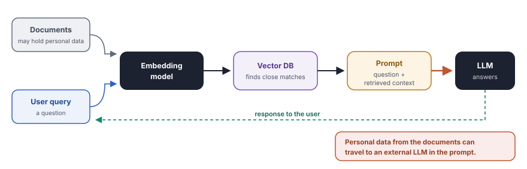
- Documents pass through an embedding model and are stored as vectors in a vector database.
- The query of the user passes through the same embedding model.
- The vector database returns the closest matching context.
- The LLM receives the prompt of the user and the retrieved context.
- The LLM sends its response.
In RAG, personal data in the documents can enter the prompt that goes to an external LLM. That is a data transfer and a privacy risk, which private RAG addresses.
AI agents. Autonomous systems that use reasoning and AI tools to reach goals through decisions in many steps. An agent sits between the user and databases, external files, software tools and APIs. It produces an output or an action. A multi-agent architecture has several agents, each with a distinct task, which work together on complex goals.
PASSFERS, the principles for responsible AI
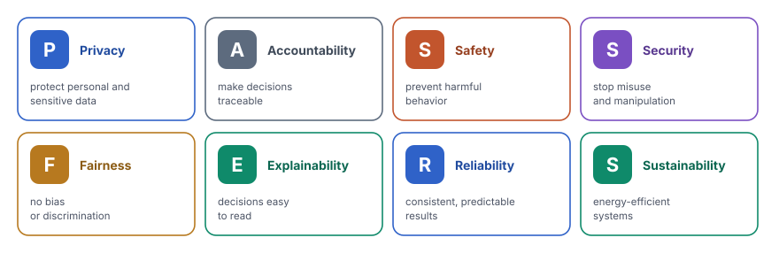
| Letter | Principle | Meaning |
|---|---|---|
| P | Privacy | Protect personal and sensitive data |
| A | Accountability | Make responsible AI decisions traceable |
| S | Safety | Prevent harmful behavior |
| S | Security | Protect AI from misuse, manipulation and threats |
| F | Fairness | Treat all users equally, without bias and discrimination |
| E | Explainability | Make AI decisions transparent and easy to interpret |
| R | Reliability | Deliver consistent, predictable results |
| S | Sustainability | Build energy-efficient AI systems |
Private RAG
The course showed a system for RAG-based anonymization and mitigation. Its core parts are listed below.
- An attribute identification module
- An encryption module
- Key management
- An encrypted inference pipeline
- A local decryption module
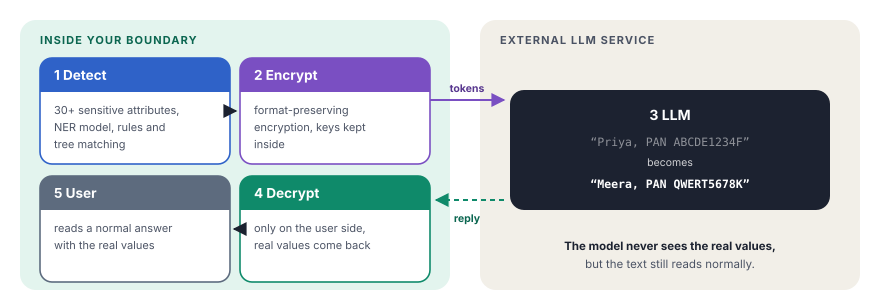
- The query or the document of the user arrives.
- The attribute identification module finds the sensitive attributes.
- The encryptor encrypts them, so that the PII in the data is encrypted.
- The external LLM works on the encrypted text and returns an encrypted response.
- The local decryptor restores the real values.
- The user sees the decrypted response.
Attribute identification and tagging. The system detects and tags more than 30 sensitive attributes. It uses NER (an AI model), rule-based pattern matching and an efficient tree matching algorithm. It also supports custom entities that the user defines. The attributes include PII, financial entities and medical entities (PHI).
Encryption and decryption. The system uses FPE, which keeps the structure, the format and the token length. The LLM can therefore process encrypted prompts without broken grammar. Decryption happens only on the side of the user.
The external LLM never sees the real names, numbers or IDs. Its answer still makes sense, because the placeholders look and behave like real values. This is pseudonymous inference.
Adversarial attacks on LLMs
An adversarial attack is an input that makes a model produce an output that it must not produce. The course showed an attacker who indirectly prompts applications with an LLM inside.
| Injection methods | Affected parties | Threats |
|---|---|---|
| Passive (through retrieval), active (for example emails), user-driven injections and hidden injections | End users, developers, automated systems and the LLM itself | Weapons, self-harm, misinformation, toxicity, privacy leakage and malware |
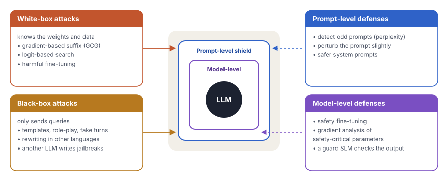
| Type | Knowledge of the attacker | Methods |
|---|---|---|
| White box | Everything, namely the training data, the architecture, the weights and the hyperparameters | Gradient-based. A jailbreak prompt built from the gradients of the model. Logit-based. A prompt built from the logits (scores) of the output tokens. Fine-tuning-based. Fine-tuning of the model with adversarial examples to bring out harmful behavior. |
| Black box | Very little, only query access | Template completion. A harmful question inside a contextual template. Prompt rewriting. The question rewritten in other natural or non-natural languages. LLM-based generation. Another LLM acts as the attacker and creates or improves jailbreak prompts. |
A white-box attack, step by step. First, the model refuses the harmful request. Next, the attacker uses the internals of the model to search for a string of unusual characters. This adversarial suffix pushes the model toward agreement. Finally, the request with the suffix receives an answer. This is the idea behind the Greedy Coordinate Gradient (GCG) attack.
Black-box template tricks. Without a jailbreak, the model refuses. With one, the harmful question hides inside one of the forms below.
- Scenario nesting. A role-play story, such as "you are a helpful robot and a kind old lady asks you...".
- In-context attack. Fabricated earlier turns in which the "assistant" already answered similar harmful questions.
- Code injection. The question split into pieces inside a small function, with a request to run it and answer the result.
Defenses against adversarial attacks
| Level | Defense | Method |
|---|---|---|
| Prompt level | Prompt detection | Detection and filtering of adversarial prompts with perplexity (the unusualness of the text) or other features |
| Prompt perturbation | A slight change to the prompt to break any hidden malicious content | |
| System prompt safeguard | Carefully designed system prompts that improve safety | |
| Model level | Fine-tuning | Fine-tuning of the LLM with safety examples to make it more robust |
| Gradient analysis | Detection of malicious prompts from the gradients of safety-critical parameters | |
| Proxy defenses | Another secure SLM or LLM that monitors and filters the output of the target LLM |
AI red teaming
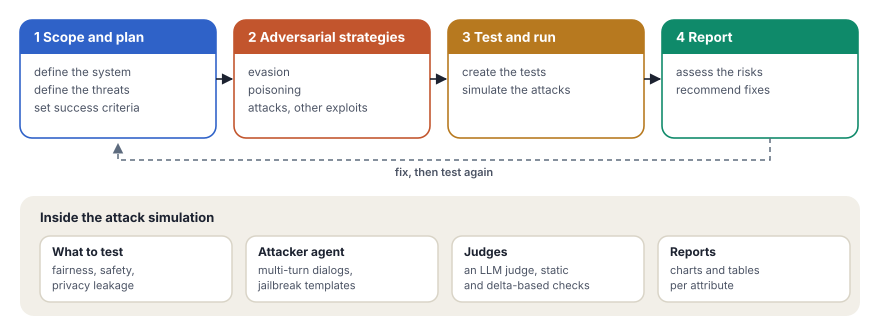
- Scoping and planning. Define the system, define the threats and set the success criteria.
- Adversarial strategies. Evasion, poisoning, attacks and other exploits.
- Testing and execution. Create the tests and run the simulation.
- Reporting and analysis. Assess the risks and give recommendations.
The attack simulation has four parts.
- Attributes to test. Fairness (race, religion, sex, sexual orientation, age and custom), safety (weapons, self-harm, child sexual exploitation, violent crimes, non-violent crimes and custom) and privacy (leakage of PII and of confidential data).
- Agent testing. A multi-turn dialogue attacker uses adversarial jailbreak templates, creates many prompt instances and sends them to the target LLM.
- Evaluations. An LLM judge, static evaluators and a delta-based evaluator decide whether each attack succeeded.
- Reports with charts and tables.
A governed chat with an LLM
A governed AI chat gateway sits in the responsible AI group, with the private RAG tool, the AI impact assessment and the AI governance tool. It provides governance of generative AI and LLMs for the enterprise.
- Select the AI provider and the model, type a prompt and submit it.
- An internal model tags the risks in the prompt. For "Hi I'm Alex Mercer. I live in Bengaluru, India", it tags the name as a person, Bengaluru as a location and India as a geo-political entity (GPE). A risk summary lists location risk, personal risk and first-person risk.
- Select "Generate Synthetic Prompt". The tool replaces the sensitive values with tokens, for example a different invented name and place, so the real details never reach the external model.
The gateway also detects attacks and labels them with a confidence score.
- Persuasion attack. A long framing that sounds reasonable and slowly pushes toward harmful content.
- Template attack. A known jailbreak template, for example a request to act as a different model without limits.
- GPT Fuzzer. Jailbreak templates that a program mutates automatically.
- GCG attack. A prompt with an unusual adversarial suffix, the white-box method above.
Protecting files before an LLM reads them
The private RAG tool reduces the risk of unstructured data for LLMs and RAG.
- Select "New Job", enter a job name, select the dataset mode and upload the file.
- Select the action, which is tokenize, redact or encrypt.
- Select all entities or some of them. Examples are the card verification value (CVV), card number, phone number, email, date, time and website. Others are location, SSN, unique identifier, Uniform Resource Locator (URL), organization and credential.
- Submit, select View when the job completes and download the report.
- To ask questions, select the protected file, the AI provider and the model, save, then ask questions about the file. The LLM sees only the protected version.
The course showed one sports news paragraph in tokenized and original form. A realistic token replaced every name, phone number, email address, license number and web link. The text still read normally.
Measurement of detection quality. True positives (TP) are the PII or sensitive items that the tool found. False negatives (FN) are the items that it missed.
For example, 21 items found and 0 missed give a recall of 100%.
An impact assessment for AI systems
An AI impact assessment tool does for AI systems what the DPIA workflow does for data.
- Select "New Job" and enter a job name. Select the link, which is none, a job of the document scanner or the consent manager.
- Answer the questions section by section. The sections follow the PASSFERS principles, namely privacy, accountability, safety, security, fairness, explainability, reliability and sustainability.
- The sustainability section asks about energy use and the carbon footprint during training and deployment, and about the optimization of hardware and software resources. It also asks about plans for long-term maintenance and the disposal of hardware at its end of life.
- Submit when all sections are complete. The job can also be discarded or saved as a draft.
The rollout in eight parts
This session of the course had eight parts.
- A phased design for the privacy journey
- An RFP based on a mapping to the law
- A structure for the privacy journey of the enterprise
- A start with the integration of one sample business application
- Standard policies and collaboration
- Phased onboarding of applications
- Traffic scoping and infrastructure planning for go-live
- Staging, training and go-live
The six-month plan
The plan has twenty-one activities. Each one shows the DPDP penalty that it protects against and its month. The foundations come first, followed by the technical safeguards with the highest penalties, and then AI and rights.
![Twenty-one activities over six months. Month 1 has governance and platform. Month 2 has the sample team, security, notice, consent and cookies. Month 3 has risk discovery, DPIA and safeguards for consented flows. Months 4 and 5 have safeguards for analytics, testing, call center, marketing and third-party data, and application changes. Month 6 has AI chatbot protection, AI governance, customizations, rights, sign-off and go live. Most money at risk sits in the safeguards, at up to 250 crore rupees each.](../assets/img/diagrams/pc-six-month-plan.svg)
| No. | Activity | Penalty | Month |
|---|---|---|---|
| 1 | Privacy governance and policy definition | None | 1 |
| 2 | Deployment of the platform | None | 1 |
| 3 | Onboarding of a sample application team | None | 2 |
| 4 | Security and firewall configuration | None | 2 |
| 5 | Notice and consent | Rs 50 crore | 2 |
| 6 | Cookies | Rs 50 crore | 2 |
| 7 | Risk discovery in data flows | Rs 150 crore | 3 |
| 8 | Data protection impact assessment | Rs 150 crore | 3 |
| 9 | Technical safeguards for consented data flows | Rs 250 crore | 3 |
| 10 | Technical safeguards for analytics data | Rs 250 crore | 4 and 5 |
| 11 | Technical safeguards for application test data | Rs 250 crore | 4 and 5 |
| 12 | Technical safeguards for call center data | Rs 250 crore | 4 and 5 |
| 13 | Technical safeguards for marketing data sharing | Rs 250 crore | 4 and 5 |
| 14 | Technical safeguards for third-party data sharing | Rs 250 crore | 4 and 5 |
| 15 | Changes on the side of the business applications | None | 4 and 5 |
| 16 | Protection of AI chatbots | Rs 250 crore | 6 |
| 17 | AI governance | Rs 50 crore | 6 |
| 18 | Customizations | None | 6 |
| 19 | Data principal rights | Rs 50 crore | 6 |
| 20 | User acceptance testing (UAT) sign-off | None | 6 |
| 21 | Go live | None | 6 |
Most of the money at risk in this plan is in the technical safeguards, in rows 9 to 14 and 16. Each one relates to the Rs 250 crore penalty for a failure of reasonable security safeguards. Notice and consent come early because everything else depends on them, although their penalty is lower.
An RFP mapped to the law
The course shared a sample template, "Request for Proposal, India DPDPA", where DPDPA stands for the DPDP Act. The advice is to align the RFP with the law, so that every purchase meets the obligations of the organization. The table of contents follows.
Objective of the document.
- Notice and consent
- Risk assessment to classify personal data
- Data protection impact assessment
- Data principal rights
- An approach of limited processing
- Handling of identifiable and relatable personal data
- Breach management and unauthorized use
- Deletion, and exempted use for archiving, research and statistics (non-personal use)
- Reasonable security safeguards through privacy enhancing technologies
- Data unlocked for continued processing, innovation and AI
Scope of work, with the mapping to the law.
| Work item | Mapped to |
|---|---|
| Notice and consent management | Act Sections 5 and 6. Rule 3. |
| Data protection impact assessment | Act Section 10(2). Draft Rule 12(1), final Rule 13(1). |
| Breach notification | Act Section 8(6). Rule 7. |
| Technical safeguards for protection against breach | Draft Rule 15 (final Rule 16) and the Second Schedule. Act Section 17(2)(b). Rule 6(1)(d). Draft Rule 12(3), final Rule 13(3). |
A phased deployment
There are two rows of steps. The first row builds and proves the setup on one application, and the second row scales it out.
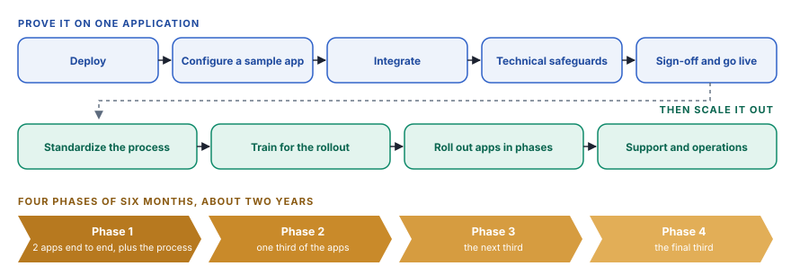
- Proof. Deployment, configuration of a sample business application, integration, technical safeguards, then UAT sign-off and go-live.
- Scale. A standard process, training for the scale-up and the rollout, a phased rollout of applications, and support and operations.
Standard policies and collaboration
- Engagement of the stakeholders with a RACI matrix (Responsible, Accountable, Consulted and Informed) across legal, information technology (IT), the application teams, the system integrator, data governance and the executives.
- Organization policies for privacy, notice, consent, cookies and data principal rights.
- Integration through API documentation and the database types.
- Security through access requirements.
- Infrastructure requirements for users, peak traffic and average traffic.
- The onboarding process for applications.
- DPIA templates and configuration.
- Technical safeguards and policies for internal and external data sharing.
- The process for staging and go-live.
- Training requirements.
The picture for this step shows the consent portal. Data goes from it through firewalls into the cloud, then through a DPIA gate that sends each data flow to the correct technical safeguard. Five safeguard boxes carry the labels A, P, S, ε and PI. These most likely stand for anonymization, pseudonymization, synthetic data, differential privacy (ε) and pseudonymous inference.
Phased onboarding of applications
| Phase | Duration | Scope |
|---|---|---|
| Phase 1 | 6 months | 2 applications set up end to end, with the process defined |
| Phase 2 | 6 months | One third of the applications |
| Phase 3 | 6 months | The next third |
| Phase 4 | 6 months | The final third |
A full rollout in an enterprise therefore takes about two years, and each phase reuses the six-month activity plan.
Traffic scoping and infrastructure planning
Before go-live, scoping questions set the size of each product. The questions show the true drivers of the load.
| Product area | Scoping questions |
|---|---|
| Consent management, cookies and rights requests | The total users of the application. The maximum expected daily API or web traffic that updates consent or rights requests. The peak concurrent users or requests per minute. The data retention period. The number of existing users who must give opt-in consent and receive a notice within 3 months, through the Short Message Service (SMS) or email gateway of the organization. The maximum concurrent users to inform of a breach (within 48 hours). |
| Threat modeling and risk discovery (structured) | The number of databases and tables to scan. The tables that need one-time discovery and scoring. The time to complete the one-time discovery (in months). The maximum concurrent ongoing scans. The retention of the reports (in years). |
| Threat modeling and risk discovery (unstructured) | The number of databases, text files and tokens to scan. The tokens for one-time discovery. The ongoing scans over the year. The maximum concurrent scans. The maximum file size (doc, searchable PDF, txt). The retention of the reports. |
| DPIA | The number of DPIAs per year. The retention period. The maximum concurrent jobs. |
| Cryptographic data collaboration and pseudonymous inference (structured) | The volume of data to encrypt for collaboration, in gigabytes (GB). The maximum concurrent API calls for encryption and decryption. The total API calls. The volume of logs. The number of separate keys (for example 10 departments × 12 months). The type of encryption, masking or hashing. |
| Expert-grade anonymization | The total volume to anonymize with a statistical guarantee (GB). The maximum per day. The maximum per batch (up to 1 lakh rows). The maximum concurrent jobs. The retention of anonymized data on the platform. |
| Synthetic data for utility and for testing | The total volume to generate. The volume per day, week or month. The maximum per batch (up to 1 lakh rows). The maximum concurrent jobs. The retention of synthetic data. |
| Differentially private data sharing | The data volume and the number of tables for insights. The number of users who make API calls. The maximum concurrent API calls. The retention of the records of queries and privacy budgets. |
| Pseudonymous inference for unstructured data and AI inference | The total tokens to anonymize or tokenize. The maximum tokens per API call. The maximum concurrent API calls and jobs. The maximum file size. The number of separate keys. |
| Platform | The users who log in. The concurrent API calls. The number of databases to connect. The required microservices. The tenants. The services (frontend, backend, scheduler and connector). A MongoDB cluster with replica sets. The PostgreSQL requirements. A vault for secret management. |
Staging, training and go-live
- Staging. Analyze the results, standardize the process and set the scope of application onboarding.
- Training. Train the stakeholders on the defined policies and processes for a faster rollout.
- Go-live. Lead the industry with a pioneering privacy program and strengthen the trust of customers.
The final session covered four topics, namely AI TRiSM, agentic DPIA, agentic AI red teaming and guardian agents.
AI TRiSM
The course used the Gartner chart "Sample AI TRiSM Technologies". It lists technologies by layer across the AI life cycle, from the initial steps through development, update and deployment to operation.
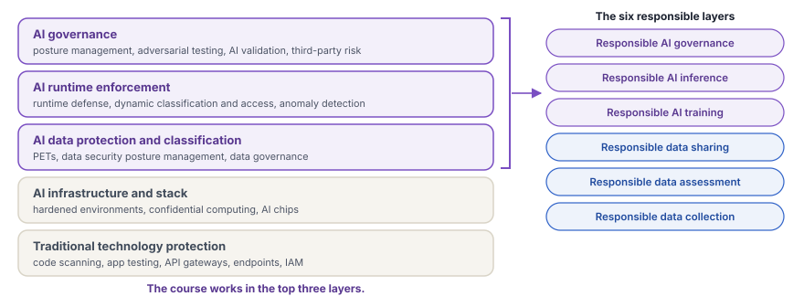
| Gartner layer | Sample technologies |
|---|---|
| AI governance | Posture management, adversarial testing of AI systems, AI validation and third-party risk management |
| AI runtime enforcement | Runtime defense, dynamic data classification and contextual access management, and anomaly detection |
| AI data protection and classification | PETs, DSPM, data governance and data classification |
| AI infrastructure and stack | Hardened environments, trusted execution environments (TEEs) for confidential computing, and AI chipsets |
| Traditional technology protection | Software composition analysis, application security testing, web application and API protection (WAAP), API gateways, endpoint security as well as identity and access management (IAM) |
The six responsible layers of the course fit in the top three Gartner layers.
- Responsible AI governance. Continuous posture management and agentic orchestration, with feedback to the data collection and training pipeline.
- Responsible AI inference. An inline prompt firewall based on an SLM, pseudonymous inference, RAG privacy and security, with detection and prevention of AI attacks.
- Responsible AI training and assessment. Privacy-preserving machine learning, AI red teaming and attack simulation, and agentic AI impact assessment.
- Responsible data sharing. Expert anonymization, FHE, differential privacy, synthetic data with DP, ZKP, verifiable credentials, SMPC, threshold cryptography and PSI.
- Responsible data assessment. PTM, privacy attack simulation, risk quantification, automated technical and regulatory recommendations, agentic DPIA and data governance.
- Responsible data collection. Verifiable and provable consent, the RoPA, agentic consent, rights requests, breach management and a workflow for data deletion.
The course closed this topic with the full-stack staircase from Part 1.
Agents for DPIA and red teaming
Agentic DPIA. A chat-based agent runs the DPIA as a conversation. It opens with a request for the name of the project and continues with follow-up questions. People do not have to complete a long form.
Agentic AI red teaming. An agent runs attack simulations on a model and writes an AI red teaming report. The report contains a fairness analysis (bias across groups) and a privacy analysis (for example PII leakage), with charts and methods.
Guardian agents
Gartner describes guardian agents as AI agents that oversee other AI systems. They have two roles.
- Sentinel. Observes, builds a baseline and gives real-time insights.
- Operative. Acts when something is wrong, with the context of the baseline.
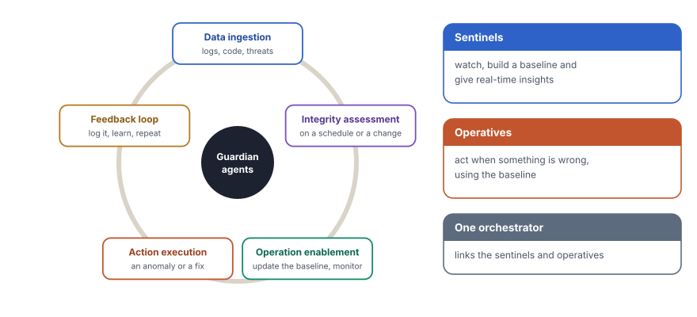
They work in a loop.
- Data ingestion. New data arrives, such as logs, code and threats.
- Integrity assessment. It starts on a schedule, after a system change or with new data.
- Operation enablement. The agent updates the baseline and starts to monitor.
- Action execution. The agent detects an anomaly or activates a recommendation.
- Feedback loop. The action completes and the event enters the log, which feeds the next round.
The course mapped planned agents onto this model. The sentinels sit on one side and the operatives on the other, with an orchestrator agent in the middle that links them.
| Agent | Area of protection |
|---|---|
| A consent agent | Notice and consent |
| A DPIA agent | PETs and DPIA |
| A red-teaming agent | The model |
| An AI security agent | AI security |
| An orchestrator agent | Orchestration across all of them |
The course ended with a vote of thanks.
My takeaways
- Security and privacy are different disciplines. A well-protected system can still collect too much and share too much. The privacy triad deserves the same attention as the CIA triad.
- Compliance starts with notice and consent. The value lies in safeguards. The largest penalties and the largest business value both sit in the technical safeguards.
- Removal of names is not anonymization. Quasi-identifiers and linkage re-identify people, so the organization must measure the risk and never assume it.
- Each PET removes some risks and leaves others. The technique must suit the data flow and the relevant attack. The organization then measures the result again.
- Unrelatable data is outside the DPDP Act. This is how PETs lawfully unlock data for research, sharing and AI.
- AI opens new paths for leaks. Prompts, RAG context and model outputs can all carry personal data, and jailbreaks are a new class of attack. They need their own tests and guardrails.
- A privacy program is a rollout, not a document. It proceeds in phases, in the order of penalty risk. Real traffic numbers set its size.
Choosing the right privacy technology
The guide below brings the whole course together as a set of decisions. Start at the top, answer each question for the data at hand, and follow the lane that matches the task. Each result names the part of this article that explains it.
- A Store and process inside
- B Share or publish
- C Compute or prove with others
- D Use with AI and LLMs
![Start with personal data that you want to use. If the notice and the consent do not cover the use, and the use cannot work with unrelatable data, give a new notice and get fresh consent. If the use can work with unrelatable data, go to lane B. If the notice and consent cover the use, select a lane. Lane A is to store and process the data inside your organization. Lane B is to share or publish it. Lane C is to compute or prove something with other parties or the cloud. Lane D is to use it with AI or an LLM.](../assets/img/diagrams/pc-guide-start.svg)
Lane A, store and process inside the organization
![Always apply the Rule 6 baseline of encryption, access control, logs kept for one year, backups and processor contracts. If systems need the original format, use format-preserving encryption, else AES-GCM. If teams must join records without identities, use pseudonymization with a key vault. If you are a Significant Data Fiduciary or the flow is high risk, run an augmented DPIA and a yearly audit. If the purpose ended or consent was withdrawn, erase the data and tell processors. Then keep the logs and review.](../assets/img/diagrams/pc-guide-a.svg)
Lane B, share or publish data
![First measure the risk with threat modeling. If the receiver does not need individual records, share insights only, with a differentially private query service for many queries or aggregates with DP noise for one release. If the records need not be real people, use synthetic data with DP. If you must link back to the person, use pseudonymization, which stays personal data. If the data is location data, use a crowd rule. Else generalize and suppress the quasi-identifiers until k-anonymity, then apply l-diversity, t-closeness and DP noise as needed, and measure again. When the risk is low, share the anonymized data.](../assets/img/diagrams/pc-guide-b.svg)
Lane C, compute or prove with other parties
![If you must prove a fact and not show the data, use a zero knowledge proof or a verifiable credential. If two parties only need the items that they share, use private set intersection. If several parties need one joint result, use federated learning for model training or secure multi-party computation for other results. If an outside service must compute on your data, use fully homomorphic encryption for the strongest guarantee or confidential computing for speed. If no single person may hold the full key, use threshold cryptography.](../assets/img/diagrams/pc-guide-c.svg)
Lane D, use data with AI and LLMs
![If you train or fine-tune a model on personal data, make the data non-personal first with synthetic data and DP or with anonymization, and a Significant Data Fiduciary must check its algorithms. If prompts or RAG documents with personal data go to an external LLM, use private RAG with detection, format-preserving tokens and local decryption, and measure recall. If users or untrusted text reach the model, add prompt-level and model-level defenses. Before release, run AI red teaming and an AI impact assessment. In production, monitor with guardian agents.](../assets/img/diagrams/pc-guide-d.svg)
The whole course on one page
Part 1, privacy is more than security
- The security triad is confidentiality, integrity and availability. The privacy triad is predictability, manageability and disassociability.
- Security solves data at rest and in transit. Data in use is the privacy problem.
- PETs move data from identifiable (regulated, with penalties up to Rs 250 crore) to unrelatable (outside the Act).
- Privacy can be a profit center through PET-based querying and AI training.
Part 2, notice, consent, rights and breaches
- Personal data is any data about an identifiable individual (2(t)).
- The notice stands alone (Rule 3(a)) and has five contents.
- Consent is free, specific, informed, unconditional, unambiguous and a clear affirmative action (6(1)). The fiduciary must prove it (6(10)).
- The rights are access (11), correction and erasure (12), grievance (13) and nomination (14).
- Erasure follows a 48-hour warning (Rule 8), and happens on withdrawal or at the end of the purpose (8(7)).
Part 3, threat modeling and the augmented DPIA
- An SDF needs a DPO in India, an independent auditor, a periodic DPIA and a periodic audit (Section 10).
- The augmented DPIA combines business inputs, a technical risk assessment and DPO approval.
- PTM uses a dataset scanner (structured) and a document scanner (unstructured), aligned to LINDDUN and NIST.
- The attacks include singling out, linkage, inference, background knowledge and homogeneity.
- The fixes are k-anonymity, then l-diversity, then t-closeness, then DP.
Part 4, anonymization, pseudonymization and encryption
- Input PETs protect the computation (FHE, SMPC, PSI, ZKP, threshold cryptography). Output PETs protect the release (k-anonymity, t-closeness, DP, synthetic data).
- Pseudonymized data is still personal data. Anonymized data is not.
- Rule 6 covers encryption, access control, logs, continued processing, one-year retention, contracts and measures.
- Under Section 33(2), timely mitigation lowers the penalty.
Part 5, synthetic data and differential privacy
- Synthetic data looks and behaves like real data and contains no real people. Distributions, PCA and correlations check its quality.
- DP uses calibrated noise for a mathematical guarantee. A smaller ε means more privacy.
- The privacy budget limits the total number of queries.
- Local DP adds noise on the device. Central DP adds it after collection.
- The mechanisms are Laplace (numbers), Gaussian (relaxed) and randomized response (categories).
Part 6, private AI
- Under draft Rule 12(3) (final 13(3)), SDFs must check that their algorithms do not harm rights.
- The research exemption combines Act 17(2)(b) with draft Rule 15 (final 16) and the Second Schedule.
- Private RAG finds the sensitive attributes, encrypts them with FPE, sends them to the LLM and decrypts locally.
- White-box attacks use gradients, logits or fine-tuning. Black-box attacks use templates, rewriting or LLM-generated prompts.
- Red teaming moves through scope, strategies, tests and reports, guided by the PASSFERS principles.
Part 7, a privacy program
- A 21-step plan over six months, in the order of penalty.
- The RFP follows the law.
- The rollout starts on one application, then moves through 4 phases of 6 months.
- Real traffic numbers set the size of the infrastructure before go-live.
Part 8, the road ahead
- The AI TRiSM layers are governance, runtime enforcement, data protection, infrastructure and traditional protection.
- Agents now perform DPIAs and red teaming.
- Guardian agents work in a feedback loop, where sentinels observe and operatives act.
Check your learning
Each question links to one idea of the course. Select a question to reveal the answer.
A database has strong encryption and strict access control, but it collects more data than it needs and shares it with partners. Is it private?
No. It passes the security test but fails the privacy test, especially predictability and manageability. Security protects access, while privacy limits what the organization collects and does with the data (Part 1).
Which failure carries the largest penalty under the DPDP Act?
The failure to take reasonable security safeguards, with a penalty of up to Rs 250 crore (Section 8(5)). It is larger than the penalty for a failure to notify a breach (Part 2).
Who must prove that a notice was given and that consent was obtained?
The Data Fiduciary, under Section 6(10). Signed consent records, verifiable credentials and versioned consent histories make this proof possible (Part 2).
A dataset has no names, but it keeps age, gender and pincode. Why can it still identify people?
These are quasi-identifiers. Together they can single out a person, especially when an attacker joins them with public data such as electoral rolls. This is a linkage attack (Part 3).
A table is 3-anonymous, but every row in a group shows the same diagnosis. Which attack still works, and which technique stops it?
The homogeneity, or inference, attack still works, because the attacker learns the diagnosis without the exact row. l-diversity stops it, and t-closeness gives stronger protection (Part 3).
Is pseudonymized data still personal data?
Yes. A key can reverse it, and the singling out, linkability and inference risks all remain. It still needs consent and safeguards (Part 4).
A bank, a credit bureau and an applicant want a credit score from a cloud service, and none of them can reveal its data. Which technology fits?
Fully homomorphic encryption (FHE). The cloud computes on encrypted data and returns an encrypted score that each party decrypts with its own key (Part 4).
Two companies want to know their common customers without revealing the rest of their lists. Which technology fits?
Private set intersection (PSI). Each company learns only the overlap (Part 4).
A count query returns 1002, and the same query without one known person returns 1001. What does differential privacy change here?
It adds calibrated noise to each answer and spends part of a privacy budget. The attacker can then no longer tell whether one row changed the result (Part 5).
Does a smaller epsilon give stronger or weaker privacy?
Stronger privacy, with more noise and less accurate results (Part 5).
A RAG system sends customer documents to an external LLM. How can the LLM answer without seeing the real names and numbers?
Through pseudonymous inference. A detector finds the sensitive attributes, format-preserving encryption replaces them with realistic tokens, and decryption happens only on the side of the user (Part 6).
An attacker hides a harmful question inside a role-play story. Which type of attack is this, and which defenses help?
A black-box template attack, called scenario nesting. Prompt detection, prompt perturbation, safer system prompts and a guard model on the output all help, and red teaming finds such weaknesses before release (Part 6).
In a six-month privacy program, why do notice and consent come before the high-penalty safeguards?
Everything else depends on them. The safeguards protect data flows that must first rest on a valid notice and consent (Part 7).
What is the difference between a sentinel and an operative in guardian agents?
A sentinel observes, builds a baseline and gives insights. An operative acts when something is wrong, with the context of that baseline (Part 8).
DPDP quick reference
The sections of the Act and the rules that this article cites, with the part that covers each.
DPDP Act 2023
| Section | Topic | In this article |
|---|---|---|
| 2(t) | Definition of personal data | Part 1, Part 2 |
| 2(u) | Definition of personal data breach | Part 2 |
| 2(x) | Definition of processing | Part 2 |
| 3 | Application of the Act (digital personal data) | Part 1 |
| 4(1) | Grounds for processing (in the advice of the dataset scanner) | Part 3 |
| 5 | Notice | Part 2 |
| 6, 6(1) | Consent and its qualities | Part 2 |
| 6(10) | The fiduciary must prove the notice and the consent | Part 2 |
| 8(4) | Technical and organizational measures (in the advice of the dataset scanner) | Part 3 |
| 8(5) | Reasonable security safeguards | Part 2, Part 4 |
| 8(6) | Breach notification | Part 2 |
| 8(7) | Erasure after withdrawal or at the end of the purpose | Part 2 |
| 9 | Data of children | Part 2 (penalty) |
| 10, 10(2)(c) | Duties of a Significant Data Fiduciary and the periodic DPIA | Part 3 |
| 11 | Right to access information | Part 2 |
| 12 | Right to correction and erasure | Part 2 |
| 13 | Right of grievance redressal | Part 2 |
| 14 | Right to nominate | Part 2 |
| 15 | Duties of the Data Principal | Part 2 (penalty) |
| 17(2)(b) | Exemption for research, archiving and statistics | Part 6 |
| 33(2) and the Schedule | Penalty factors and amounts | Part 2, Part 4 |
DPDP Rules, draft numbers and final numbers
The final Rules were notified in November 2025. Rules 1, 2 and 17 to 21 took effect at once. Rule 4 (Consent Managers) starts 12 months later. Rules 3, 5 to 16, 22 and 23 start 18 months after the notification.
| Topic | Draft rule (January 2025, used in the course) | Final rule (November 2025) | In this article |
|---|---|---|---|
| Notice | 3 | 3 | Part 2 |
| Consent Managers | 4 | 4 | Not in detail |
| Processing by the State | 5 | 5 | Not covered |
| Reasonable security safeguards, with continued processing (6(1)(d)) | 6 | 6 | Part 4, Part 6 |
| Breach intimation | 7 | 7 | Part 1 |
| Erasure and retention period (Third Schedule) | 8 | 8 | Part 2 |
| Contact details of the DPO or the responder | 9 | 9 | Not covered |
| Verifiable consent for children | 10 | 10 | Not covered |
| Consent for persons with disability | 11 | 11 | Not covered |
| Exemptions from the rules on the data of children | Not a separate rule | 12 (new) | Not covered |
| Duties of a Significant Data Fiduciary, DPIA and audit, algorithmic due diligence (12(3)) | 12 | 13 | Part 3, Part 6 |
| Rights of Data Principals and grievances | 13 | 14 | Part 2 |
| Processing outside India | 14 | 15 | Not covered |
| Research, archiving and statistics (Second Schedule) | 15 | 16 | Part 6 |
The final rule numbers were checked against public summaries of the Gazette text, such as those of SCC Online and S.S. Rana & Co. For a precise clause, refer to the Gazette text.
Numbers and formulas
| Item | Value or formula | Meaning |
|---|---|---|
| k (k-anonymity) | Each combination of quasi-identifiers occurs at least k times | Stops singling out. The default of the dataset scanner is k = 5. |
| l (l-diversity) | At least l different sensitive values in each group | Stops homogeneity attacks |
| t (t-closeness) | Distance between the sensitive distribution of the group and of the table ≤ t, with 0 ≤ t < 1 | Stops inference from skewed groups. Example threshold 0.35. The default of the dataset scanner is 0.5. |
| Outlier value | 0.2 (default of the dataset scanner) | The threshold to flag unusual records |
| ε (epsilon) | Smaller means more private | Permitted privacy loss for each query or set of queries. It adds up across queries. |
| δ (delta) | A small positive number | The probability that the ε guarantee fails |
| DP definition | Pr[M(D) ∈ S] ≤ eε Pr[M(D′) ∈ S] + δ | The output changes very little when you add or remove one person |
| Laplace noise scale | sensitivity ÷ ε | Count queries have a sensitivity of 1 |
| Recall | (TP × 100) ÷ (TP + FN) | The share of sensitive items that a detector finds |
| Risk score of a dataset | 0 to 100 | Qualitative privacy risk of a dataset |
| Risk index of a dataset | 0 to 2500+ | Quantitative overall risk |
| Threshold scheme | t-of-n (example 2-of-3) | Any t of the n key holders can rebuild the key |
| Sweeney (1997) | About 87% | The share of people that zip code, gender and birth date identify |
| Erasure warning | 48 hours | The notice before erasure at the end of the Third Schedule period |
| Location privacy rule (example) | At least 10 cases within 1 km | The minimum crowd before you show a location |
| Rollout | 4 phases × 6 months | 2 applications first, then the portfolio in thirds |
Penalties at a glance
| Failure | Up to |
|---|---|
| Reasonable security safeguards | Rs 250 crore |
| Breach notification | Rs 200 crore |
| Obligations for the data of children | Rs 200 crore |
| Obligations of a Significant Data Fiduciary | Rs 150 crore |
| Any other provision (for example notice, consent and rights) | Rs 50 crore |
| Duties of a Data Principal | Rs 10,000 |
Key terms
| Term | Meaning |
|---|---|
| AES-GCM | A standard encryption mode that keeps data secret and also finds changes to it. |
| AI TRiSM | AI Trust, Risk and Security Management. The Gartner name for the controls that make AI trustworthy. |
| Anonymization | A change to data so that nobody can be identified from it, now or later, even when you combine it with other data. You cannot reverse it. |
| Augmented DPIA | A DPIA that adds a measured technical risk (from PTM) to the usual questionnaire. |
| Consent Manager | A registered entity under the DPDP Act. Through it, a person can give, manage and withdraw consent. |
| Data Fiduciary | The organization that decides the purpose and the means of the processing (the "controller" of the GDPR). |
| Data Principal | The person that the data is about (the "data subject" of the GDPR). |
| Data Processor | An organization that processes data for a Data Fiduciary. |
| Differential privacy (DP) | A mathematical guarantee that the result of an analysis changes very little, with or without the data of any one person. Calibrated noise gives it. |
| Direct identifier | A field that identifies a person alone, for example the name, the phone number or the Aadhaar number. |
| DPIA | Data Protection Impact Assessment. A review of the purpose of a processing activity and its risks to the rights of people. |
| DPR / DSR | Data Principal Rights or Data Subject Rights, namely access, correction, erasure, grievance and nomination. |
| DSPM | Data Security Posture Management. Tools that find data stores and check their security. |
| FHE | Fully homomorphic encryption. You can compute on encrypted data and not decrypt it. |
| FPE | Format-preserving encryption. The encrypted value keeps the format and the length of the original. |
| Generalization | The replacement of a precise value with a range or a category (age 22 becomes 20–25). |
| Guardian agent | An AI agent that monitors and acts on other AI systems. Sentinels watch, and operatives act. |
| Inference attack | An attack that finds a sensitive fact about a person without the exact record. |
| k-anonymity | Each record looks the same as at least k−1 others on its quasi-identifiers. |
| l-diversity | Each group of records that look the same has at least l different sensitive values. |
| LINDDUN | A privacy threat modeling method covering Linking, Identifying, Non-repudiation, Detecting, Data disclosure, Unawareness and Non-compliance. |
| Linkage attack | An attack that joins a dataset with a different one on shared fields to re-identify people. |
| NER | Named entity recognition. An AI model that finds names, places, numbers and other entities in text. |
| PASSFERS | The responsible AI principles of the course, namely Privacy, Accountability, Safety, Security, Fairness, Explainability, Reliability and Sustainability. |
| PET | Privacy enhancing technology. Any technique that lets you use data and protects the people in it. |
| PPML | Privacy-preserving machine learning. |
| PSI | Private set intersection. Two parties learn only what their lists have in common. |
| Pseudonymization | The replacement of identifiers with codes that a key can reverse. The result is still personal data. |
| PTM | Privacy threat modeling. It finds and measures privacy risk in data and data flows. |
| Quasi-identifier | A field that does not identify somebody alone, but can in combination, for example age, gender and pincode. |
| RAG | Retrieval-augmented generation. An LLM answers with documents that it gets from a vector database. |
| Red teaming | An attack on your own AI system, on purpose, to find weaknesses before others do. |
| RoPA | Record of Processing Activities. A list of the data that you process, with the reason, the place and the people who do it. |
| SDF | Significant Data Fiduciary. A fiduciary that the government names for extra duties because of the volume or sensitivity of its data. |
| Singling out | Isolating the record of one person in a dataset. |
| SLM | Small language model. Here, a fast guard in front of a larger model. |
| SMPC | Secure multi-party computation. Several parties compute a result and do not show their inputs. |
| Suppression | Hiding part or all of a value with a symbol (47677 becomes 476**). |
| Synthetic data | Artificial data that keeps the statistics of real data but contains no real people. |
| t-closeness | The spread of sensitive values in each group stays close to the spread in the whole table. |
| Threshold cryptography | A key is split, so that only a set number of holders together can use it. |
| Tokenization | The replacement of a value with a token. A secure lookup table keeps the mapping. |
| Verifiable credential | A signed digital claim with metadata, claims and proofs. An issuer issues it, a holder keeps it and a verifier checks it. |
| ZKP | Zero knowledge proof. A proof that a statement is true, which shows nothing more. |
Thank you for reading.